1அறிமுகம்Introduction — இந்த வழிகாட்டியை எப்படிப் பயன்படுத்துவது
Vaasal Villa மேலாண்மை அமைப்பு இரண்டு தனித்தனி அமைப்புகளைக் கொண்டது: வில்லாக்களை நிர்வகிக்கும் ஹோட்டல் PMS (Property Management System) மற்றும் உணவகத்தை நடத்தும் உணவக POS (Point of Sale). இரண்டும் ஒரே உள்நுழைவுப் பக்கத்தைப் பயன்படுத்தினாலும், ஒவ்வொரு பணியாளரும் தமது பாத்திரத்துக்கு (role) அனுமதிக்கப்பட்ட பகுதியை மட்டுமே காண முடியும்.
ஹோட்டல் PMS
முன்பதிவுகள், வில்லா காலண்டர்
வருகைப் பதிவு / வெளியேறுதல்
விருந்தினர் கணக்கு (Folio), விலைப்பட்டியல்
வீட்டுப் பராமரிப்பு, பராமரிப்புப் பணிகள்
சாவி அட்டைகள், இரவுத் தணிக்கை, அறிக்கைகள்
POS "Charge to villa" → விருந்தினர் Folio
திறந்த உணவகக் கணக்கு → Checkout தடை
Checkout → வீட்டுப் பராமரிப்புப் பணி
உணவக POS
மேசைகள், ஆர்டர்கள், டேக்அவே
அறை சேவை (Room service)
சமையலறைத் திரை (KOT / KDS)
பில், பணம், மீதி, பற்றுச்சீட்டு
காசாளர் ஷிப்ட், நாள் முடிவு, விற்பனை
இரு அமைப்புகளும் மூன்று இடங்களில் மட்டுமே இணைகின்றன (மேலே நடுவில்). மற்ற எல்லாவற்றிலும் அவை தனித்தனியாக இயங்குகின்றன — உதாரணமாக வரவேற்பாளர் (Reception) POS-ஐத் திறக்க முடியாது; காசாளர் (Cashier) ஹோட்டல் முன்பதிவுகளைப் பார்க்க முடியாது.
1.1இந்த ஆவணத்தில் உள்ள திரைப்படங்கள்
இதிலுள்ள 82 திரைப்படங்களும் (screenshots) 29 செப்டம்பர் 2026 அன்று உள்ளூர் XAMPP கணினியில், உண்மையான தரவுத்தளத்தில், உண்மையான பயனர் இடைமுகத்தின் மூலம் எடுக்கப்பட்டவை. எந்தப் படமும் வரையப்படவோ திருத்தப்படவோ இல்லை. முழு அளவுப் படங்கள் screenshots/ கோப்புறையில் உள்ளன; இந்த PDF-இல் நீளமான பக்கங்கள் பல பகுதிகளாகப் பிரிக்கப்பட்டுள்ளன.
சில பயனர்கள் வெளிர் நிறத் தோற்றத்தையும் (light theme), சிலர் இருண்ட தோற்றத்தையும் (dark theme) தேர்ந்தெடுத்திருப்பதால் படங்களின் நிறம் வேறுபடலாம். மேல் வலது மூலையில் உள்ள ◐ பொத்தான் மூலம் இதை மாற்றலாம்.
1.2நிலைக் குறியீடுகள்
ஒவ்வொரு வசதியும் பின்வரும் நிலைகளில் ஒன்றாகக் குறிக்கப்பட்டுள்ளது:
குறியீடு
பொருள்
Implemented
கணினியில் உள்ளது, பயன்படுத்தலாம்.
Tested
இந்த QA-இல் உண்மையாகச் சோதிக்கப்பட்டு சரியாக வேலை செய்தது.
Partially
ஒரு பகுதி மட்டும் உள்ளது அல்லது வெளிச் சேவை இல்லாமல் முழுமையாகச் சோதிக்க முடியவில்லை.
Simulated
உண்மையான கருவி/சேவைக்குப் பதிலாக சிமுலேட்டர் பயன்படுகிறது (உ-ம்: RFID கதவுப் பூட்டுகள், sandbox பணக் கொடுப்பனவு).
Nuwan-க்கு (G1) அறை சேவை — உணவு LKR 8,500, வில்லாக் கணக்கில் சேர்த்தல்
7, 8
D
Checkout — அறை + உணவகம் + சலவைக் கட்டணங்கள் ஒரே பில்லில்
9
E
G1 வில்லாவைச் சுத்தம் செய்து "Ready" ஆக்குதல்
10
உண்மை நிகழ்வு வரிசை
G1-இல் ஏற்கனவே தங்கியிருந்த விருந்தினர் Oliver Jensen முதலில் வெளியேறினார் (உதா. D), பின்னர் G1 சுத்தம் செய்யப்பட்டது (உதா. E), அதன் பிறகே Nuwan Perera G1-இல் தங்க வந்தார் (உதா. A). அதனால் படங்களும் அதே வரிசையில் எடுக்கப்பட்டன.
2உள்நுழைவு மற்றும் பாதுகாப்புSign in, sign out, session and password rules
2.1உள்நுழைவது எப்படி
உலாவியில் கணினியின் முகவரியைத் திறந்து Staff sign in பக்கத்துக்குச் செல்லுங்கள்.
Username or email பெட்டியில் உங்கள் பயனர் பெயரை (உ-ம்: reception) அல்லது மின்னஞ்சலை உள்ளிடுங்கள்.
Password பெட்டியில் கடவுச்சொல்லை உள்ளிட்டு Sign in அழுத்துங்கள். கண் குறியை அழுத்தினால் தட்டச்சு செய்ததைப் பார்க்கலாம்.
உங்கள் பாத்திரத்துக்கான முகப்புப் பக்கம் தானாகத் திறக்கும் (உ-ம்: காசாளர் → POS Terminal, சமையலறை → Kitchen display).
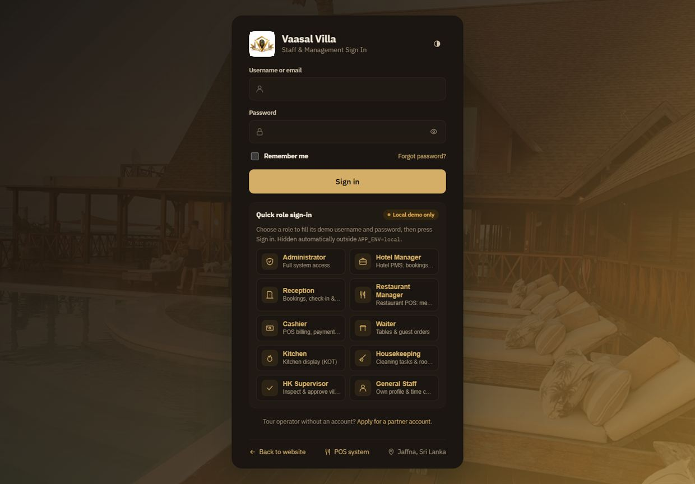
படம் 1 · Figure 1 — உள்நுழைவுப் பக்கம். கீழே உள்ள "Quick role sign-in" அட்டைகள் உள்ளூர் (APP_ENV=local) சோதனைக்கு மட்டுமே; production-இல் தானாக மறைந்துவிடும். screenshots/14_login_page.png · 1440×1003 px
டெமோ கடவுச்சொற்கள்
டெமோ கணக்குகளின் கடவுச்சொல் இந்த ஆவணத்தில் அச்சிடப்படவில்லை. அது திட்டத்தின் README.md கோப்பில் மட்டுமே உள்ளது. உண்மையான பயன்பாட்டுக்கு முன் ஒவ்வொரு கணக்கின் கடவுச்சொல்லையும் மாற்றுங்கள் (My profile → Change password; குறைந்தது 10 எழுத்துகள்).
2.2தவறான கடவுச்சொல் மற்றும் கணக்குப் பூட்டு
பயனர் பெயர் அல்லது கடவுச்சொல் தவறானால் ஒரே பொதுவான செய்தி வரும்: "The username/email or password is incorrect." — எது தவறு என்று கணினி சொல்லாது (பாதுகாப்புக்காக).
5 முறை தவறாக முயன்றால் கணக்கு 15 நிமிடங்கள் பூட்டப்படும். திரையில் "Try again after HH:MM" என்று நேரம் காட்டும். நிர்வாகி Users பக்கத்தில் பூட்டை நீக்கலாம்.
ஒரே IP முகவரியிலிருந்து அதிக முயற்சிகள் வந்தாலும் தற்காலிகமாகத் தடுக்கப்படும்.
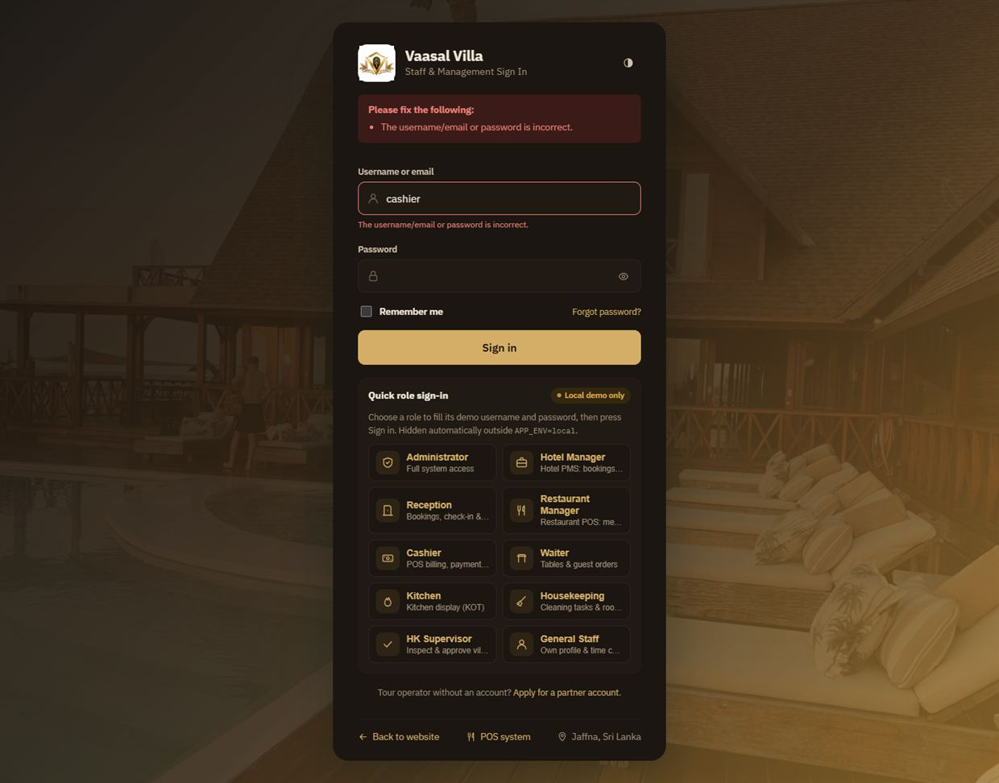
படம் 2 · Figure 2 — தவறான கடவுச்சொல்: பொதுவான பிழைச் செய்தி. கடவுச்சொல் பெட்டி தானாகக் காலியாகிறது. screenshots/77_invalid_login.png · 1440×1129 px
2.3அமர்வு முடிவு (Session ended)
30 நிமிடங்கள் எதுவும் செய்யாமல் இருந்தால், அல்லது அதே உலாவியில் வேறொரு கணக்கில் உள்நுழைந்தால், அல்லது வேறொரு tab-இல் வெளியேறினால் உங்கள் அமர்வு (session) முடிந்துவிடும். முன்பு POS திரையில் இது வெறும் "Unauthenticated" என்று காட்டியது. இந்த QA-இல் அது சரிசெய்யப்பட்டது: இப்போது தெளிவான செய்தி தோன்றி, 2.5 விநாடிகளில் உள்நுழைவுப் பக்கத்துக்குச் செல்லும்; மீண்டும் உள்நுழைந்ததும் நீங்கள் இருந்த அதே பக்கத்துக்குத் திரும்புவீர்கள்.
படம் 3 · Figure 3 — POS திரையில் அமர்வு முடிந்தது: "Your session has ended … Taking you to sign-in…" செய்தி. screenshots/75_session_ended.png · 1440×900 px
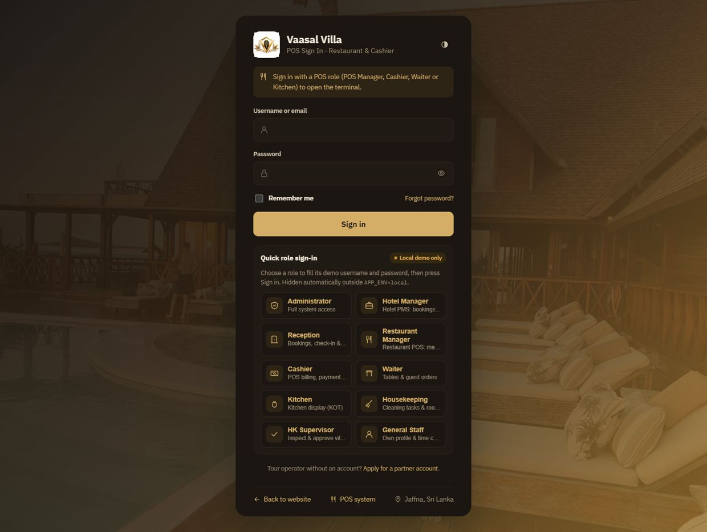
படம் 4 · Figure 4 — உள்நுழைவுப் பக்கம் — உள்நுழைந்ததும் முன்பு இருந்த POS பக்கத்துக்கே திரும்பும். screenshots/76_session_return.png · 1440×1083 px
நல்ல பழக்கங்கள்
ஒரே உலாவியில் இரண்டு வெவ்வேறு கணக்குகளில் ஒரே நேரத்தில் வேலை செய்ய வேண்டாம்.
மேசையை விட்டுச் செல்லும்போது இடது கீழே உள்ள Log out அழுத்துங்கள்.
பகிர்ந்து பயன்படுத்தும் கணினியில் "Remember me" தேர்வு செய்ய வேண்டாம்.
3பாத்திரங்கள் மற்றும் அனுமதிகள்Roles & permission matrix — tested by direct URL access
ஒவ்வொரு பயனருக்கும் ஒரு பாத்திரம் (role) உண்டு. பக்கப்பட்டியில் (sidebar) அனுமதியுள்ள பக்கங்கள் மட்டுமே தெரியும். மறைக்கப்பட்ட பக்கத்தின் முகவரியை நேரடியாகத் தட்டச்சு செய்தாலும் சேவையகம் 403 Forbidden பதிலைத் தரும் — இது 15 பாத்திரங்களுக்கும், ஒவ்வொன்றுக்கும் 90 பக்கங்கள் வீதம் சோதிக்கப்பட்டது (ஒரு பிழையும் இல்லை).
பாத்திரம்
டெமோ பயனர்
முகப்புப் பக்கம்
முக்கியப் பணிகள்
Administrator
admin
Dashboard
எல்லாவற்றுக்கும் அனுமதி, பயனர்கள், அமைப்புகள்
Owner
owner
Dashboard
பார்வை அனுமதி மட்டும்: டாஷ்போர்டு, அறிக்கைகள் (உணவக விற்பனை உட்பட), கொடுப்பனவுகள், வில்லாக்கள், audit log
பில், பணம், அறைக் கணக்கில் சேர்த்தல், சொந்த ஷிப்ட்
Waiter
waiter
POS Terminal
மேசை ஆர்டர், சமையலறைக்கு அனுப்புதல் (பணம் வாங்க முடியாது)
Kitchen Staff
kitchen
Kitchen display
KOT நிலை மாற்றுதல்
Inventory Staff
stores
Inventory
கையிருப்பு, கொள்முதல், விநியோகஸ்தர்கள்
HK Supervisor
hksupervisor
Housekeeping board
பணி ஒதுக்கீடு, ஆய்வு, அங்கீகாரம்
Housekeeping
housekeeping
My cleaning tasks
சுத்தம் செய்யும் பணிகள், சரிபார்ப்புப் பட்டியல்
Maintenance
maintenance
Maintenance
பழுது பார்க்கும் பணிகள்
General Staff
staff
My time card
சொந்த வருகைப் பதிவு, விடுப்பு
Tour Operator
operator
Partner portal
தமது முன்பதிவுகள் மட்டும் (பணியாளர் பக்கங்கள் இல்லை)
அனுமதி அட்டவணை (நேரடி URL சோதனை முடிவு)
Role
Booking
Check-in
Check-out
Room Management
Housekeeping Board
My Cleaning Tasks
Guests
Key Cards
Restaurant Pos
Kot / Kitchen
Payments (pms)
Folio / Guest Charges
Reports (pms)
Restaurant Sales
Admin Settings
Night Audit
Administrator
✓
✓
✓
✓
✓
✓
✓
✓
✓
✓
✓
✓
✓
✓
✓
✓
Owner
—
—
—
✓
✓
—
✓
✓
—
—
✓
—
✓
—
—
—
Hotel Manager
✓
✓
✓
✓
✓
—
✓
✓
—
—
✓
✓
✓
—
—
✓
Receptionist
✓
✓
✓
✓
✓
—
✓
✓
—
—
✓
✓
✓
—
—
—
Accountant
—
—
—
—
—
—
✓
—
—
—
✓
✓
✓
—
—
—
Restaurant Manager
—
—
—
—
—
—
—
—
✓
✓
—
—
—
✓
—
—
Cashier
—
—
—
—
—
—
—
—
✓
—
—
—
—
—
—
—
Waiter
—
—
—
—
—
—
—
—
✓
—
—
—
—
—
—
—
Kitchen Staff
—
—
—
—
—
—
—
—
—
✓
—
—
—
✓
—
—
Inventory Staff
—
—
—
—
—
—
—
—
—
—
—
—
—
✓
—
—
Housekeeping Supervisor
—
—
—
✓
✓
✓
—
—
—
—
—
—
✓
—
—
—
Housekeeping Staff
—
—
—
—
—
✓
—
—
—
—
—
—
—
—
—
—
Maintenance Technician
—
—
—
✓
—
—
—
—
—
—
—
—
—
—
—
—
General Staff
—
—
—
—
—
—
—
—
—
—
—
—
—
—
—
—
Tour Operator
—
—
—
—
—
—
—
—
—
—
—
—
—
—
—
—
✓ = பக்கம் திறந்தது (HTTP 200) · — = மறுக்கப்பட்டது (403, அல்லது partner portal-க்குத் திருப்பப்பட்டது 302). ஹோட்டல் பணியாளர்கள் POS-ஐயும், உணவகப் பணியாளர்கள் ஹோட்டல் பக்கங்களையும் திறக்க முடியாது என்பதை அட்டவணை உறுதிப்படுத்துகிறது.
4டாஷ்போர்டு மற்றும் முன் மேசைAdmin dashboard & Front desk
நிர்வாகி மற்றும் மேலாளர் உள்நுழைந்ததும் Dashboard திறக்கும். இதில் இன்றைய வருகைகள், தங்கியுள்ளோர், வெளியேற வேண்டியோர், நிரம்பல் சதவீதம், வருமானம், வீட்டுப் பராமரிப்பு நிலை, திறந்த உணவகக் கணக்குகள் போன்றவை ஒரே பார்வையில் தெரியும். மேலே உள்ள மணிக் குறி (🔔 எண்) புதிய அறிவிப்புகளைக் காட்டும்.
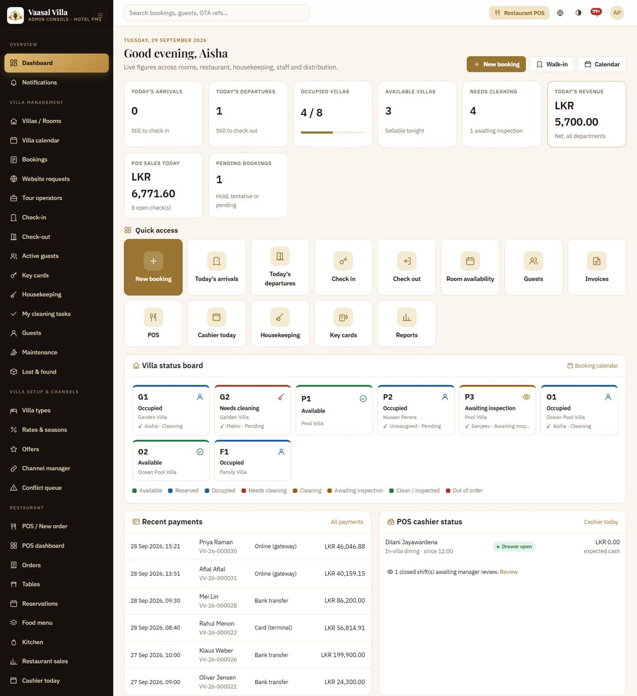
படம் 5 · Figure 5 (1/2) — நிர்வாகி டாஷ்போர்டு (Administrator).
வரவேற்பாளரின் முதன்மைப் பக்கம் Front desk. மேலே நான்கு எண்ணிக்கைகள்: Arrivals pending, In-house, Departures pending, Villas ready. கீழே தாவல்கள் (tabs): Arrivals, In-house, Departures, Next 3 days, Villa status. Walk-in மற்றும் Run night audit பொத்தான்கள் மேல் வலதில் உள்ளன.
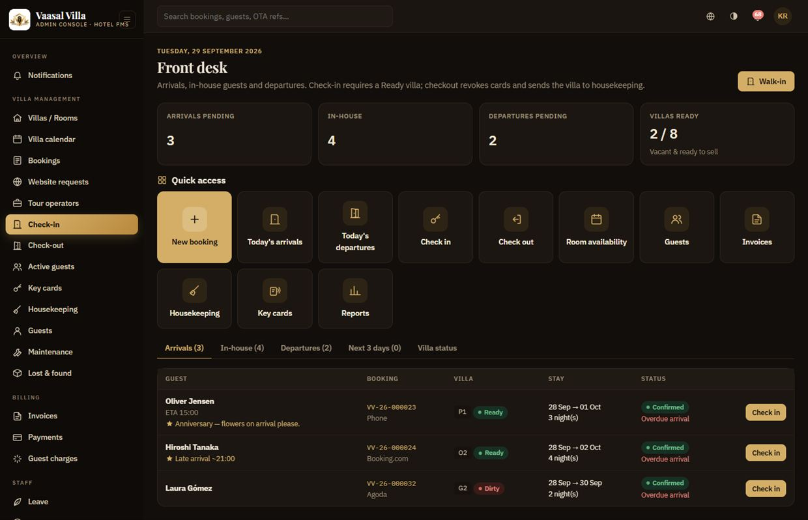
படம் 6 · Figure 6 — முன் மேசை (Front desk) — வரவேற்பாளர் பார்வை. screenshots/15_front_desk.png · 1440×927 px
5முன்பதிவுகள் — உதாரணம் ABookings & walk-in: Nuwan Perera, villa G1
5.1முன்பதிவு மூலங்கள் (Booking sources)
மூலம்
யார் உருவாக்குவது
நிலை
Phone / Email / Admin
வரவேற்பாளர் அல்லது மேலாளர் — Bookings → New booking
Tested
Walk-in
முன் மேசை — Walk-in பொத்தான்
Tested
Tour operator
பணியாளர் (ஒப்பந்த விலை) அல்லது operator தனது partner portal-இல்
Tested
Website
விருந்தினர் இணையதளத்தில்; கட்டணம் செலுத்தும் வரை "hold"
Simulated sandbox கட்டணம்
OTA (Booking.com போன்றவை)
Channel manager webhook
Simulated — நேரடி இணைப்பு இல்லை (CHANNEL_DRIVER=null)
5.2கணினி சரிபார்க்கும் விதிகள்
முன்பதிவு விதிகள் (சோதிக்கப்பட்டவை)
வருகைத் தேதி கடந்த தேதியாக இருக்க முடியாது; புறப்படும் தேதி வருகைக்குப் பின் இருக்க வேண்டும்.
தங்கும் ஒவ்வொரு இரவிலும் வில்லா காலியாக இருக்க வேண்டும் — ஒரு இரவு கூட முன்பதிவாகியிருந்தால் அந்த வில்லா பட்டியலில் வராது. ஒரே வில்லாவுக்கு இரட்டை முன்பதிவு சாத்தியமில்லை.
பழுதில் உள்ள (Out of order) வில்லா பட்டியலில் வராது, சேமிக்கவும் முடியாது.
சில தேதிகளுக்கு/சலுகைகளுக்கு குறைந்தபட்ச இரவுகள் உண்டு (உ-ம்: "A minimum stay of 3 nights applies"; STAY4 சலுகைக்கு 4 இரவுகள்).
தவறான promo code நிராகரிக்கப்படும்.
இன்றே வருகை என்றால் வில்லா Ready நிலையில் இருக்க வேண்டும் (அத்தியாயம் 10).
இரவு விலையை மாற்ற (override) Hotel Manager அனுமதி தேவை, காரணமும் கட்டாயம்; இது History-இல் பதிவாகும்.
5.3உதாரணம் A — Walk-in முன்பதிவு
விருந்தினர் Nuwan Perera முன்பதிவின்றி நேரடியாக வந்து, 29 செப்டம்பர் முதல் 3 அக்டோபர் 2026 வரை (4 இரவுகள்) இருவருக்குத் தங்க விரும்புகிறார். மேலாளர் இரவுக்கு LKR 30,500 விலைக்கு ஒப்புக்கொண்டார்; விருந்தினர் LKR 20,000 முற்பணத்தை அட்டையால் செலுத்தினார்.
Front desk → Walk-in அழுத்துங்கள். இன்றைய தேதியுடன் முன்பதிவுப் படிவம் திறக்கும் (Booking source = Walk-in).
1 · Stay: Arrival = 29/09/2026, Departure = 03/10/2026. Rate plan தேர்வு செய்யுங்கள்.
2 · Villas available: அந்த 4 இரவுகளிலும் காலியாக உள்ள வில்லாக்கள் மட்டும் தெரியும் (இங்கு G1, P3, F1). G1-ஐ டிக் செய்து Adults = 2, Children = 0.
3 · Guest: பெயர், நாடு, மின்னஞ்சல், தொலைபேசி, எதிர்பார்க்கும் வருகை நேரம். (மின்னஞ்சல் மூலம் பழைய விருந்தினர் தானாகப் பொருத்தப்படுவார்.)
வலப்பக்க Summary-இல் Override nightly rate திறந்து 30500 மற்றும் காரணம் "Walk-in rate agreed by manager".
Deposit taken now = 20000, Method = Card. Continue to check-in டிக் செய்திருக்கட்டும்.
Create booking அழுத்துங்கள். முன்பதிவு எண் உருவாகி நேரடியாக check-in பக்கம் திறக்கும்.
விலையை override செய்தாலும் படிவத்தின் வலப்பக்க "Total" பழைய (சாதாரண) விலையிலேயே LKR 162,756.00 என்று காட்டுகிறது (படம் 8). ஆனால் சேமித்த முன்பதிவு சரியான override விலையில் கணக்கிடப்படுகிறது (கீழே). சேமித்த பின் check-in பக்கத்திலுள்ள "Booking total"-ஐயே நம்புங்கள்.
உதாரணம் A — கணினி கணக்கிட்ட தொகை (VV-26-000033)
விவரம்
LKR
அறை: 4 இரவுகள் × 30,500
122,000.00
சேவைக் கட்டணம் 10%
12,200.00
வரி 8% (அறை + சேவைக் கட்டணம் மீது)
10,736.00
முன்பதிவு மொத்தம் (Booking total)
144,936.00
முற்பணம் (அட்டை, PAY-26-000044)
− 20,000.00
முன்பதிவுக்கு எதிரான நிலுவை
124,936.00
கொள்கைப்படி பரிந்துரைக்கப்படும் முற்பணம் 30% = LKR 43,480.80; குறைவாகப் பெற்றாலும் கணினி ஏற்கிறது, "Deposit due" என்று காட்டுகிறது.
5.4முன்பதிவுப் பட்டியல் மற்றும் வில்லா காலண்டர்
Bookings பக்கத்தில் எல்லா முன்பதிவுகளையும் நிலை, மூலம், தேதி மூலம் தேடலாம். Villa calendar ஒவ்வொரு வில்லாவின் ஒவ்வொரு இரவையும் வண்ணத்தில் காட்டும்.
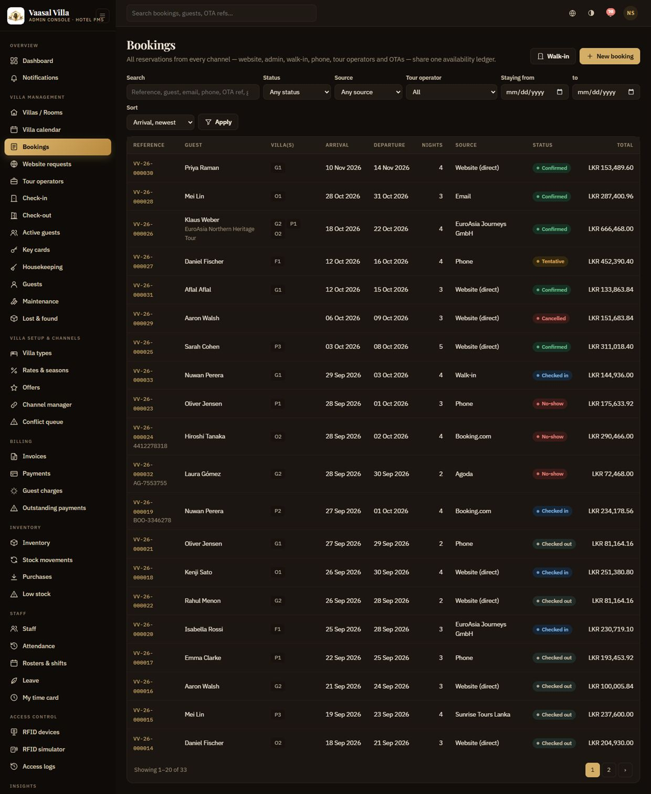
படம் 9 · Figure 9 — முன்பதிவுப் பட்டியல். screenshots/51_bookings.png · 1440×1753 px
6வருகைப் பதிவு (Check-in)Identity, villa assignment and key card
Walk-in முன்பதிவைச் சேமித்ததும் check-in பக்கம் தானாகத் திறக்கும். முன்கூட்டிய முன்பதிவுகளுக்கு Front desk → Arrivals → விருந்தினர் பெயர் → Check in.
1 · Verify identity: ஆவண வகை (Passport / National ID / Driving licence), ஆவண எண் (கட்டாயம்), காலாவதி, தேசியம், தொலைபேசி. ஆவணப் படத்தை scan செய்து இணைக்கலாம் — அது தனிப்பட்ட முறையில் சேமிக்கப்படும்; பின்னர் எண் மறைக்கப்பட்டு (••••2211) காட்டப்படும்.
2 · Villa & key cards: வில்லாவின் வீட்டுப் பராமரிப்பு நிலை Ready ஆக இருக்க வேண்டும். வேறு வில்லா ஒதுக்க வேண்டுமெனில் "Assign a different villa". "Free cards" பட்டியலில் இருந்து ஒரு அட்டையை அழுத்தினால் அதன் UID "Key card UID" பெட்டியில் நிரம்பும் (அல்லது encoder reader-இல் அட்டையைத் தட்டுங்கள்).
உடன் வந்தவர்களைப் பதிய Register accompanying guests.
3 · Payment: தேவையெனில் மேலும் முற்பணம் பெறலாம்.
Complete check-in அழுத்துங்கள். பதிவு அட்டையை அச்சிட Print registration card.
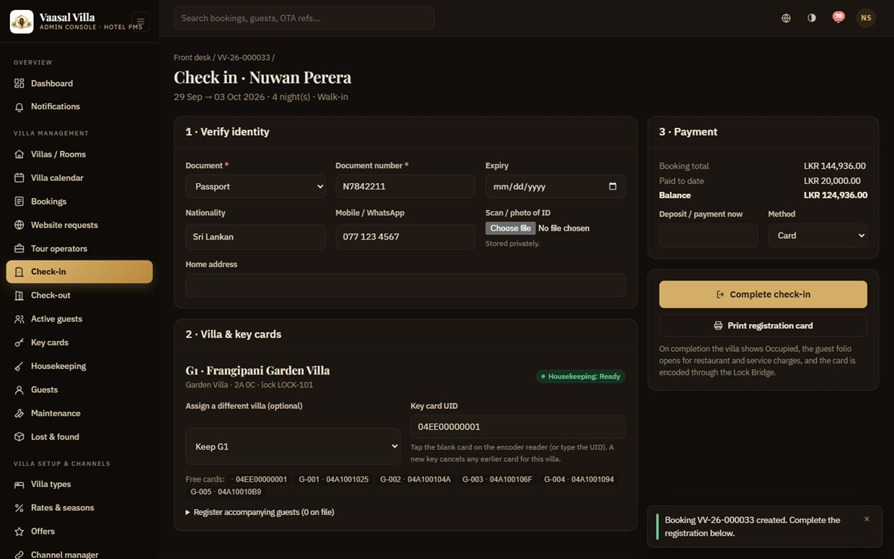
படம் 11 · Figure 11 — Check-in: அடையாள ஆவணம் மற்றும் G1-க்கான சாவி அட்டை (04EE00000001). screenshots/04_checkin.png · 1440×900 px
Check-in விதிகள்
வில்லா Ready இல்லையெனில் check-in தடுக்கப்படும் ("Villa P3 is not ready (housekeeping: Dirty)"). மேலாளர்/மேற்பார்வையாளர் மட்டும் "Check in anyway" தேர்வை உறுதிப்படுத்திப் பயன்படுத்தலாம்.
புதிய சாவி அட்டை வழங்கினால் அதே வில்லாவுக்கான பழைய அட்டை தானாகச் செல்லாததாகும்.
அட்டை வெளியேறும் நாள் 12:00 வரை செல்லுபடியாகும் (இங்கு 03 அக் 2026, 12:00).
Check-in முடிந்ததும் முன்பதிவுப் பக்கம் Checked in நிலையைக் காட்டும்; வில்லா Occupied ஆகும்; விருந்தினர் கணக்கு (Folio) உணவக மற்றும் சேவைக் கட்டணங்களுக்குத் திறக்கப்படும்.
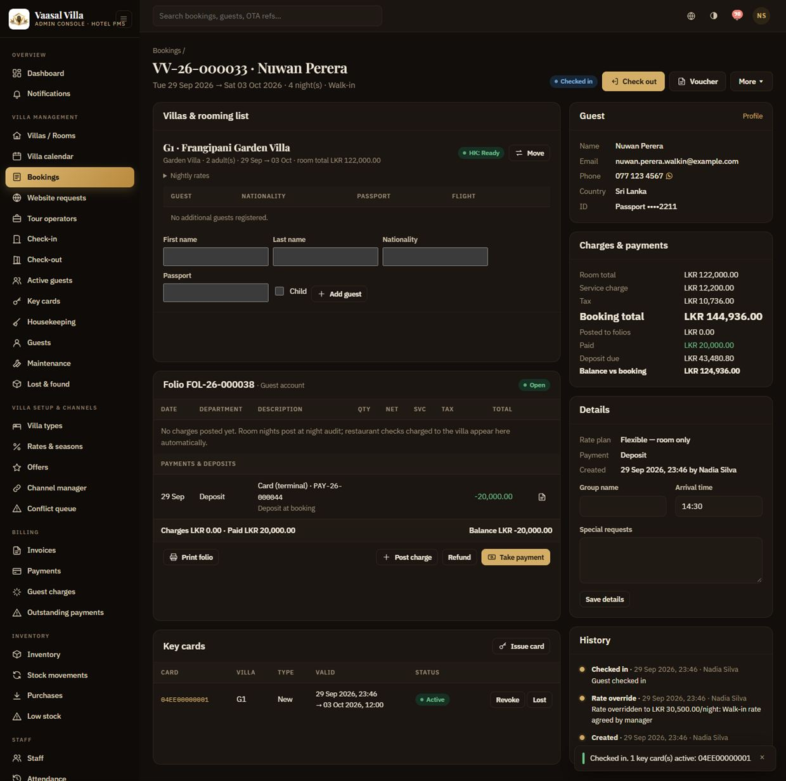
படம் 12 · Figure 12 — Check-in முடிந்தது: VV-26-000033 — Checked in, G1, சாவி அட்டை Active. screenshots/26_checked_in.png · 1440×1430 px
சாவி அட்டை — சிமுலேஷன்
இந்தக் கணினியில் LOCK_DRIVER=simulator. அட்டை "encode" செய்வது Lock Bridge வழியாக உண்மையான கதவுப் பூட்டுக்குச் செல்வதில்லை; உண்மையான RFID/பூட்டு வன்பொருள் இணைக்கப்படவில்லை. விவரம்: அத்தியாயம் 14.
7அறை சேவை — உதாரணம் CRoom service for villa G1, charged to the guest folio
விருந்தினர் வில்லாவிலிருந்து தொலைபேசியில் உணவு கேட்கும்போது, காசாளர் அல்லது பணியாளர் POS-இல் Room service check ஒன்றைத் திறக்கிறார். அந்த check தங்கியுள்ள விருந்தினருடன் இணைக்கப்படுவதால், பின்னர் அதை நேரடியாக வில்லாக் கணக்கில் (folio) சேர்க்கலாம்.
POS Terminal-இல் outlet = In-villa dining தேர்வு செய்து Room service அழுத்துங்கள்.
தங்கியுள்ள விருந்தினர் பட்டியல் தோன்றும் (வில்லா · பெயர் · முன்பதிவு எண்). G1 · Nuwan Perera தேர்வு செய்யுங்கள்.
மெனுவிலிருந்து உணவுகளைச் சேர்க்கவும்: Seafood linguine (5,600) + Crab soup (2,900) = உணவு மொத்தம் LKR 8,500. கட்டாய விருப்பத் தேர்வுகள் (உ-ம்: காரத்தின் அளவு) உள்ள உணவுகளுக்கு அவற்றைத் தேர்வு செய்யாமல் சேர்க்க முடியாது.
Send அழுத்துங்கள் — KOT சமையலறைக்குச் செல்லும்.
சமையலறை தயாரித்து அனுப்பியதும் Pay → Charge to villa → Complete payment.
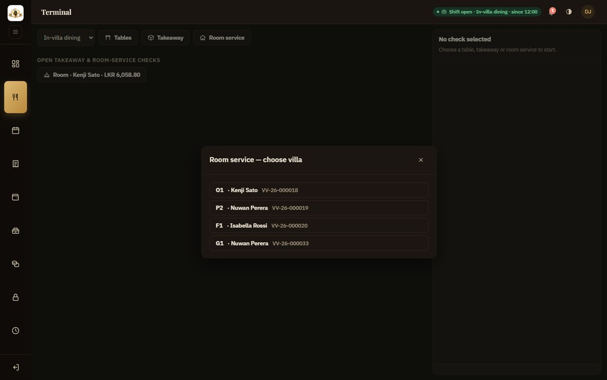
படம் 13 · Figure 13 — Room service: தங்கியுள்ள விருந்தினர்/வில்லாவைத் தேர்வு செய்தல். screenshots/27_room_service_select.png · 1440×900 px
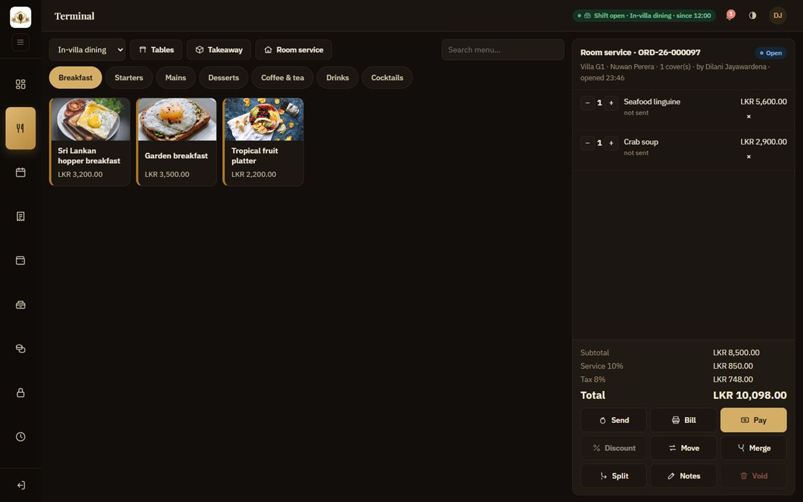
படம் 14 · Figure 14 — G1-க்கான அறை சேவை check — சமையலறைக்கு அனுப்பும் முன். screenshots/28_room_service_check.png · 1440×900 px
7.1சமையலறைத் திரை (KOT / KDS)
சமையலறைப் பணியாளர் உள்நுழைந்ததும் Kitchen display திறக்கும். ஒவ்வொரு அட்டையும் ஒரு KOT (Kitchen Order Ticket): மேசை/வில்லா, KOT எண், outlet, ஆர்டர் எடுத்தவர், நிலையம் (kitchen / bar), உணவுகள், விருப்பத் தேர்வுகள், அனுப்பி எத்தனை நிமிடம் ஆனது. திரை ஒவ்வொரு 5 விநாடிக்கும் தானாகப் புதுப்பிக்கப்படும்; புதிய ticket வந்தால் ஒலி எழும்.
New→ Start →Preparing→ Ready →Ready→ Served →Served
ஒவ்வொரு பொத்தான் அழுத்தலும் ஒரு படி முன்னேற்றும். New நிலையிலிருந்து நேரடியாக Served-க்குச் செல்ல முடியாது (சோதிக்கப்பட்டது). Kitchen / Bar / All stations தாவல்கள் மூலம் நிலையத்தைத் தேர்வு செய்யலாம்.
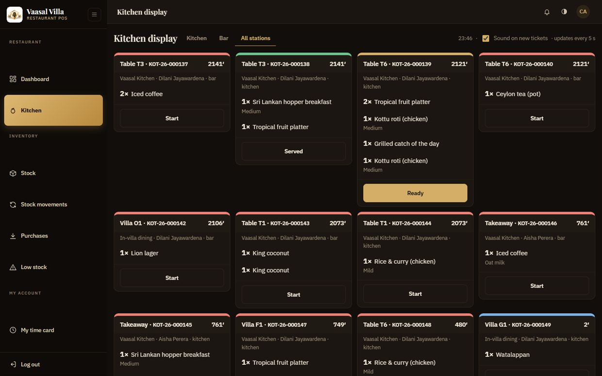
படம் 15 · Figure 15 — சமையலறைத் திரை — வில்லா G1-க்கான புதிய KOT (கீழ் வலது) மற்றும் பிற tickets. screenshots/07_kitchen_kot.png · 1440×900 px
பழைய tickets
"Served" என்று குறிக்கும் வரை ticket திரையில் இருக்கும். படத்தில் முந்தைய நாளின் டெமோ tickets 2,000+ நிமிடங்களாகத் தெரிகின்றன. ஒவ்வொரு உணவும் பரிமாறப்பட்டதும் Served அழுத்தும் பழக்கத்தைக் கடைப்பிடியுங்கள்.
7.2வில்லாக் கணக்கில் சேர்த்தல்
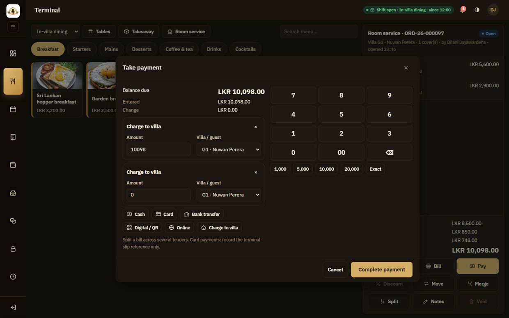
படம் 16 · Figure 16 — Take payment → "Charge to villa": G1 (Nuwan Perera) கணக்கில் சேர்த்தல். screenshots/08_room_service.png · 1440×900 px
உதாரணம் C — கணினி கணக்கிட்ட தொகை (ORD-26-000097)
விவரம்
LKR
Seafood linguine 5,600 + Crab soup 2,900
8,500.00
சேவைக் கட்டணம் 10%
850.00
வரி 8% (உணவு + சேவைக் கட்டணம்)
748.00
G1 folio-வில் சேர்ந்த தொகை
10,098.00
கவனிக்க: "LKR 8,500" என்பது மெனு விலை மட்டும். POS தானாக 10% சேவைக் கட்டணமும் 8% வரியும் சேர்ப்பதால் folio-வில் 10,098.00 பதிவாகிறது.
8விருந்தினர் கணக்கு (Folio)Guest folio, extra charges and payments
ஒவ்வொரு தங்கலுக்கும் ஒரு folio உண்டு. அதில் அறை இரவுகள் (இரவுத் தணிக்கையின்போது), அறை சேவை, உணவகக் கட்டணங்கள், சலவை, ஸ்பா, போக்குவரத்து போன்ற கட்டணங்களும், முற்பணம்/கொடுப்பனவுகளும் பதிவாகும். முன்பதிவுப் பக்கத்தில் (Bookings → முன்பதிவு எண்) folio உள்ளது.
8.1கூடுதல் கட்டணம் சேர்த்தல் — சலவை
Folio-வின் கீழே Post charge அழுத்துங்கள்.
Service பட்டியலில் "Laundry — pressing (per item) — LKR 400" தேர்வு செய்யுங்கள். விலை, விளக்கம், துறை தானாக நிரம்பும்.
Quantity = 5 (5 உடைகள் × 400 = LKR 2,000). சேவைக் கட்டணம் தேவையெனில் "Add service charge" டிக் செய்யுங்கள் (இங்கு இல்லை).
Post charge. வரி தானாகச் சேரும் (taxable சேவைகளுக்கு 8%).
பதிவான கட்டணத்தை நீக்க முடியாது; அனுமதியுள்ளவர் (folio.adjust) மட்டுமே எதிர்ப் பதிவு (reverse) செய்ய முடியும் — இரண்டுமே பதிவில் இருக்கும்.
தொகை 0.01-க்குக் குறைவாக இருக்க முடியாது; செலுத்த வேண்டியதைவிட அதிகமாக வாங்க முடியாது.
திருப்பிச் செலுத்துதல் (Refund) அனுமதி உள்ளவருக்கு மட்டும்.
Print folio மூலம் அச்சிடலாம்; Take payment மூலம் இடையில் பணம் பெறலாம்.
9வெளியேறுதல் (Checkout) — உதாரணம் DCheckout with an open restaurant check, settlement and final invoice
இந்த அத்தியாயம் G1-இல் இருந்த Oliver Jensen-இன் உண்மையான checkout-ஐக் காட்டுகிறது (27 → 29 செப், 2 இரவுகள்). அவருக்கு ஒரு அறை சேவை check (ORD-26-000096, LKR 3,207.60) இன்னும் திறந்திருந்தது.
9.1திறந்த உணவகக் கணக்கு checkout-ஐத் தடுக்கிறது
Front desk → Departures அல்லது முன்பதிவுப் பக்கத்தில் Check out.
திறந்த உணவக check இருந்தால் சிவப்புப் பெட்டியில் எச்சரிக்கை வரும்; Complete checkout பொத்தான் முடக்கப்படும்.
Request restaurant settlement அழுத்தினால் காசாளர்களுக்கு அறிவிப்பு செல்லும்.
படம் 19 · Figure 19 — Checkout தடுக்கப்பட்டது: "1 restaurant check(s) still open for this stay" — Complete checkout முடக்கப்பட்டுள்ளது. screenshots/16_checkout_blocked.png · 1440×1058 px
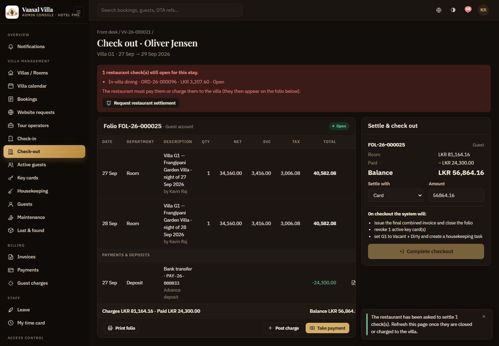
படம் 20 · Figure 20 — உணவகத் தீர்வுக்கான கோரிக்கை அனுப்பப்பட்டது. screenshots/17_settlement_requested.png · 1440×999 px
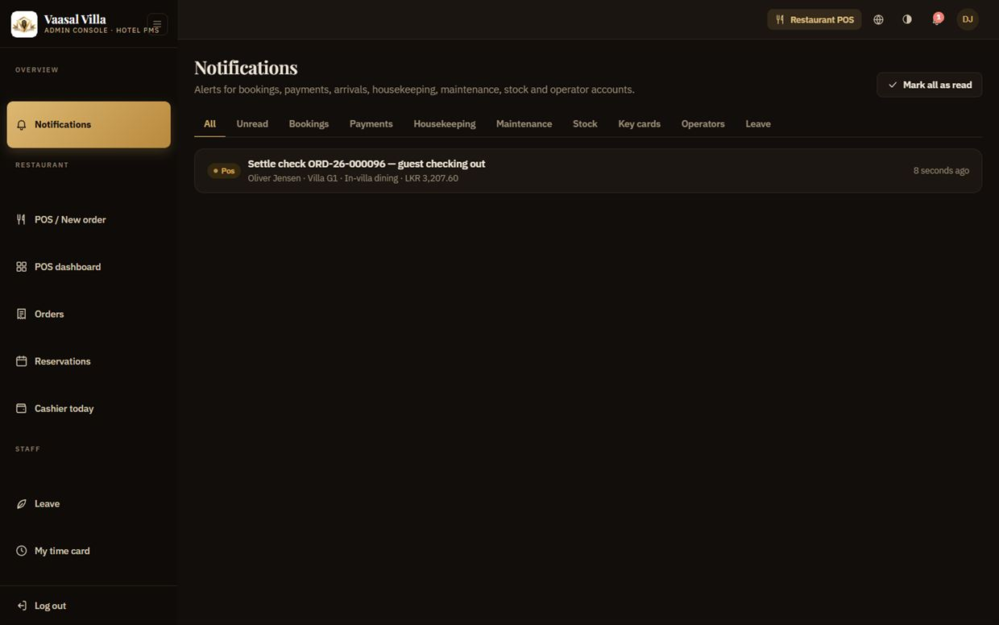
படம் 21 · Figure 21 — காசாளரின் அறிவிப்புப் பட்டியலில் கோரிக்கை. screenshots/18_cashier_notification.png · 1440×900 px
காசாளர் அந்த check-ஐத் திறந்து Pay → Charge to villa மூலம் G1 folio-வில் சேர்க்கிறார் (அல்லது விருந்தினர் நேரடியாகப் பணம் கொடுக்கலாம்).
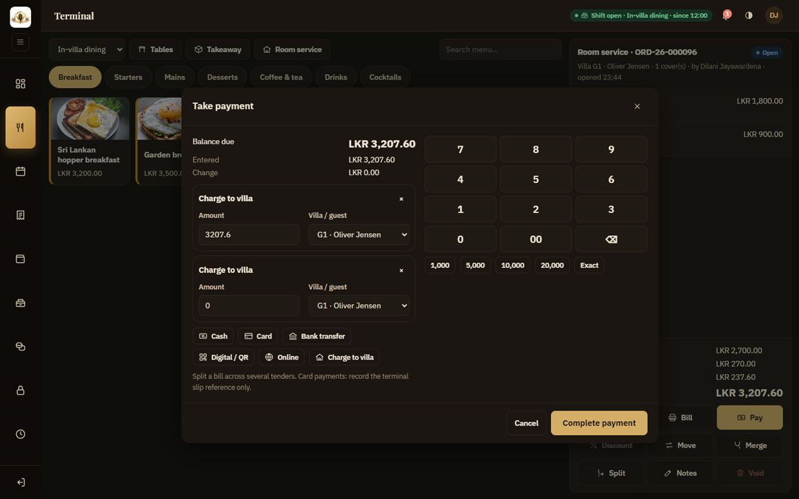
படம் 22 · Figure 22 — காசாளர்: Oliver Jensen-இன் check-ஐ G1 folio-வில் சேர்த்தல். screenshots/19_pos_charge_to_villa.png · 1440×900 px
9.2நிலுவையைச் செலுத்தி checkout முடித்தல்
Checkout பக்கத்தை மீண்டும் திறந்தால் எச்சரிக்கை மறைந்து, உணவகக் கட்டணம் folio-வில் சேர்ந்திருக்கும்.
வலப்பக்கம் Settle & check out: செலுத்தும் முறை (Card / Cash / Bank transfer …) மற்றும் தொகை (நிலுவை தானாக நிரம்பும்).
புறப்படும் தேதிக்கு முன்பே வெளியேறினால் "Confirm early departure" டிக் செய்ய வேண்டும்.
Complete checkout. கணினி: இறுதி விலைப்பட்டியல் வழங்கும், folio-வை மூடும், சாவி அட்டைகளை ரத்து செய்யும், வில்லாவை Vacant + Dirty ஆக்கி வீட்டுப் பராமரிப்புப் பணியை உருவாக்கும்.
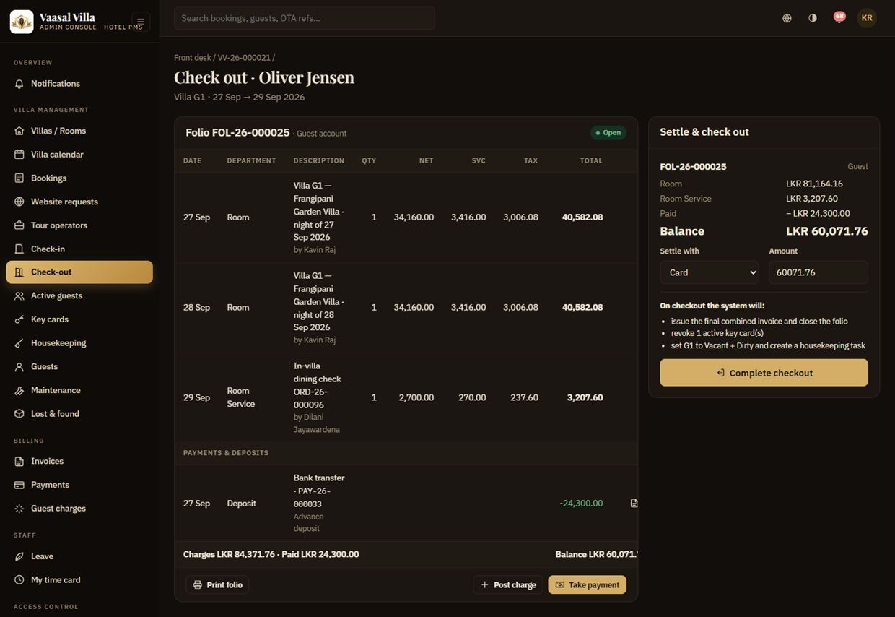
படம் 23 · Figure 23 — Checkout: அறை மற்றும் உணவகக் கட்டணங்கள் ஒரே folio-வில்; நிலுவை அட்டையால்; Complete checkout இயக்கத்தில். screenshots/10_checkout.png · 1440×992 px
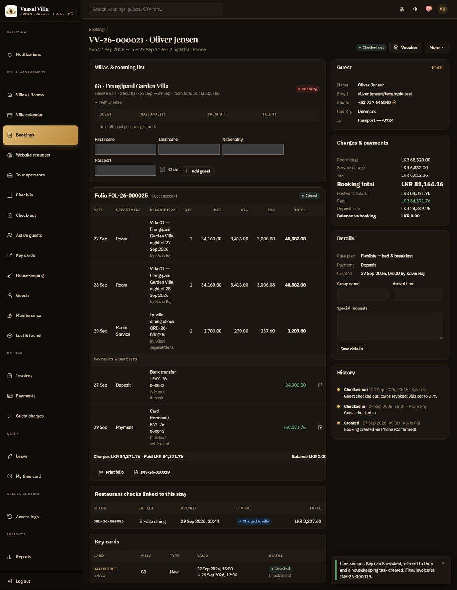
படம் 24 · Figure 24 — Checkout முடிந்தது — G1 Dirty; departure clean பணி உருவானது. screenshots/20_checkout_complete.png · 1440×1856 px
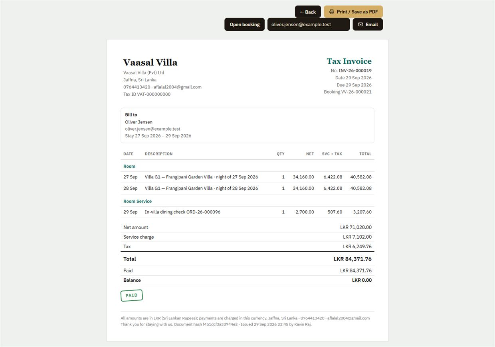
படம் 25 · Figure 25 — இறுதி விலைப்பட்டியல் INV-26-000019 — மொத்தம் LKR 84,371.76, முழுமையாகச் செலுத்தப்பட்டது. screenshots/21_final_invoice.png · 1440×1011 px
Checkout விதிகள் (சோதிக்கப்பட்டவை)
நிலுவை இருந்தால் checkout நடக்காது ("Take payment before checkout") — எதுவும் பாதியாக மாறாது.
திறந்த உணவக check இருந்தால் checkout நடக்காது.
Tour operator முன்பதிவுகளில் அறைக் கட்டணம் operator-இன் city ledger-க்கு மாற்றப்படும்.
உதாரணம் D — Oliver Jensen-இன் உண்மையான விலைப்பட்டியல் (INV-26-000019)
விவரம்
நிகர
சேவை + வரி
மொத்தம்
G1 இரவு 27 செப்
34,160.00
6,422.08
40,582.08
G1 இரவு 28 செப்
34,160.00
6,422.08
40,582.08
அறை சேவை ORD-26-000096
2,700.00
507.60
3,207.60
மொத்தம் (நிகர 71,020 + சேவை 7,102 + வரி 6,249.76)
84,371.76
முற்பணம் (வங்கிப் பரிமாற்றம்) + checkout-இல் அட்டை
84,371.76
நிலுவை
0.00
உதாரணம் D — பயிற்சிக் கணக்கு: அறை 60,000 + உணவகம் 8,500 + சலவை 2,000
இவை நிகரத் தொகைகள் (வரி சேர்க்கும் முன்) என்று எடுத்துக்கொண்டால், கணினியின் விதிகளின்படி:
கட்டணம்
நிகர
சேவை 10%
வரி 8%
மொத்தம்
அறை
60,000.00
6,000.00
5,280.00
71,280.00
உணவகம் / அறை சேவை
8,500.00
850.00
748.00
10,098.00
சலவை (சேவைக் கட்டணம் இல்லை)
2,000.00
0.00
160.00
2,160.00
மொத்தம்
70,500.00
6,850.00
6,188.00
83,538.00
முற்பணம்
− 20,000.00
Checkout-இல் செலுத்த வேண்டியது
63,538.00
இது கணினியின் வரி விதிகளைக் கொண்டு கைமுறையாகக் கணக்கிட்ட பயிற்சி உதாரணம்; மேலே உள்ள Oliver Jensen விலைப்பட்டியல்தான் கணினி உண்மையாக உருவாக்கியது. Nuwan Perera 3 அக்டோபரில் வெளியேறும்போது: அறை 144,936.00 + அறை சேவை 10,098.00 + சலவை 2,160.00 = 157,194.00 − முற்பணம் 20,000 = 137,194.00 (வேறு கட்டணங்கள் இல்லையெனில் — இது எதிர்பார்ப்புக் கணக்கு).
10வீட்டுப் பராமரிப்பு — உதாரணம் EHousekeeping: departure clean of villa G1
Checkout நடந்தவுடன் வில்லா Dirty ஆகிறது; "Departure clean" பணி உருவாகிறது; வீட்டுப் பராமரிப்புக் குழுவுக்கு உடனடி அறிவிப்பு செல்கிறது. அன்றே புதிய விருந்தினர் வருவதாக இருந்தால் பணி தானாக Urgent ஆகும்.
10.1அறைப் பணியாளர் (Room attendant)
My cleaning tasks திறக்கவும். "Ready for cleaning" பகுதியில் G1 தெரியும் — Accept.
Start அழுத்தினால் வில்லா Cleaning ஆகும். தேவையெனில் காரணத்துடன் Pause.
Checklist-இல் ஒவ்வொரு வேலையையும் டிக் செய்யுங்கள் (G1-க்கு 11 உருப்படிகள்). Start செய்யாமல் டிக் செய்ய முடியாது.
எல்லாம் முடிந்ததும் linen எண்ணிக்கையுடன் Submit for inspection. ஏதேனும் விடுபட்டால் "Complete the checklist first — N item(s) still open" என்று தடுக்கும்.
பழுது கண்டால் Report maintenance; விருந்தினர் விட்டுச்சென்ற பொருளை Lost & found-இல் பதியலாம்.
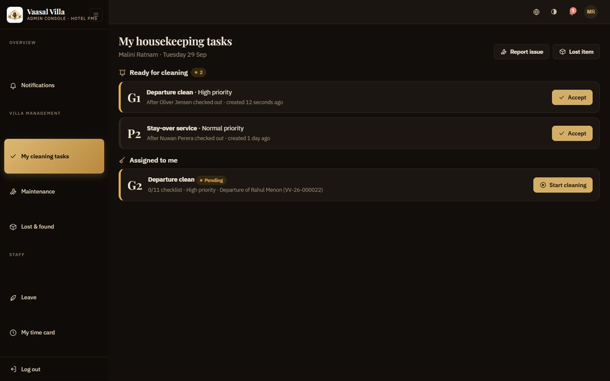
படம் 26 · Figure 26 — அறைப் பணியாளரின் "My cleaning tasks": G1 சுத்தம் செய்யத் தயார். screenshots/22_my_cleaning_tasks.png · 1440×900 px
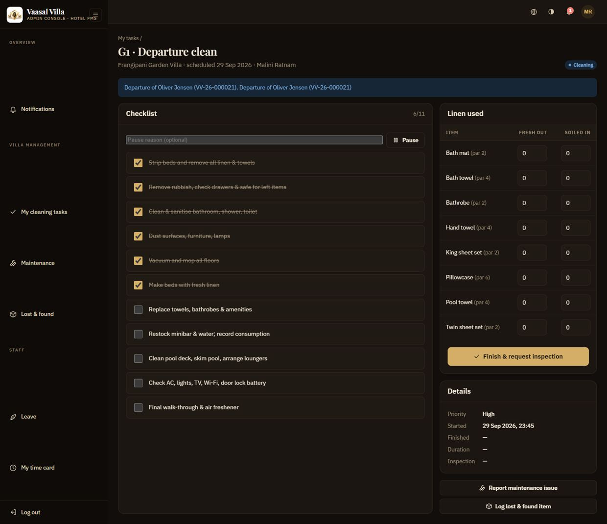
படம் 27 · Figure 27 — சுத்தம் நடைபெறுகிறது — சரிபார்ப்புப் பட்டியல் பாதி டிக் செய்யப்பட்டது. screenshots/23_cleaning_checklist.png · 1440×1242 px
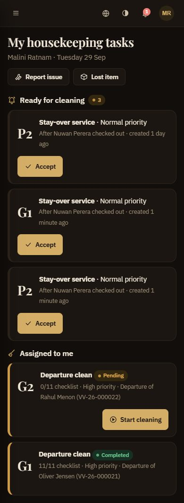
படம் 28 · Figure 28 — அதே பக்கம் கைபேசியில் (390 px) — அறைப் பணியாளர்கள் கைபேசியிலேயே பயன்படுத்தலாம். screenshots/70_mobile_my_tasks.png · 390×1061 px
10.2மேற்பார்வையாளர் (HK Supervisor)
Housekeeping board-இல் எல்லா வில்லாக்களின் நிலையும், பணிகளும், யாருக்கு ஒதுக்கப்பட்டது என்பதும் தெரியும். பணியை ஒருவருக்கு ஒதுக்கலாம்.
"Awaiting inspection" பணியைத் திறந்து சரிபார்க்கவும்.
சரியெனில் Approve → வில்லா Ready (பழுது "Out of order" இருந்தால் Clean நிலையிலேயே இருக்கும்). குறையிருந்தால் காரணத்துடன் Reject → மீண்டும் Cleaning.
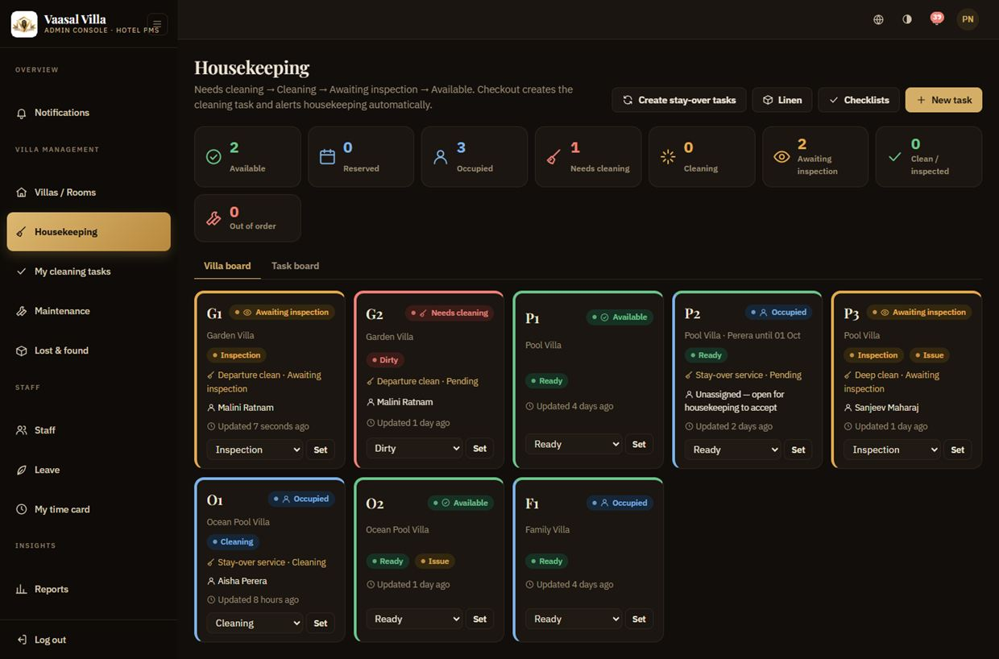
படம் 29 · Figure 29 — வீட்டுப் பராமரிப்பு board: G1 ஆய்வுக்காகக் காத்திருக்கிறது. screenshots/11_housekeeping.png · 1440×950 px
படம் 31 · Figure 31 — அங்கீகரிக்கப்பட்டது — G1 இப்போது Ready; அடுத்த விருந்தினருக்கு விற்கலாம். screenshots/25_villa_ready.png · 1440×950 px
தெரிந்த குறைபாடு — பழைய stay-over பணி
Oliver தங்கியிருந்தபோது தொடங்கிய "Stay-over service" பணி checkout-க்குப் பின்னும் "Cleaning" நிலையில் திறந்தே இருந்தது. Checkout அத்தகைய பணிகளைத் தானாக மூடுவதில்லை. மேற்பார்வையாளர் board-இல் அவற்றைக் கைமுறையாக மூட வேண்டும்.
POS Terminal-இல் outlet (Vaasal Kitchen / Pool Bar / In-villa dining) தேர்வு செய்யுங்கள். ஒவ்வொரு மேசையும் ஒரு அட்டை: காலி மேசையில் இருக்கைகளும் இடமும்; பயன்பாட்டில் உள்ளதில் தொகை, விருந்தினர் எண்ணிக்கை, பணியாளர், திறந்த நேரம்; முன்பதிவு செய்யப்பட்ட மேசையில் "Reserved" குறி. கீழே திறந்த Takeaway/Room-service checks.
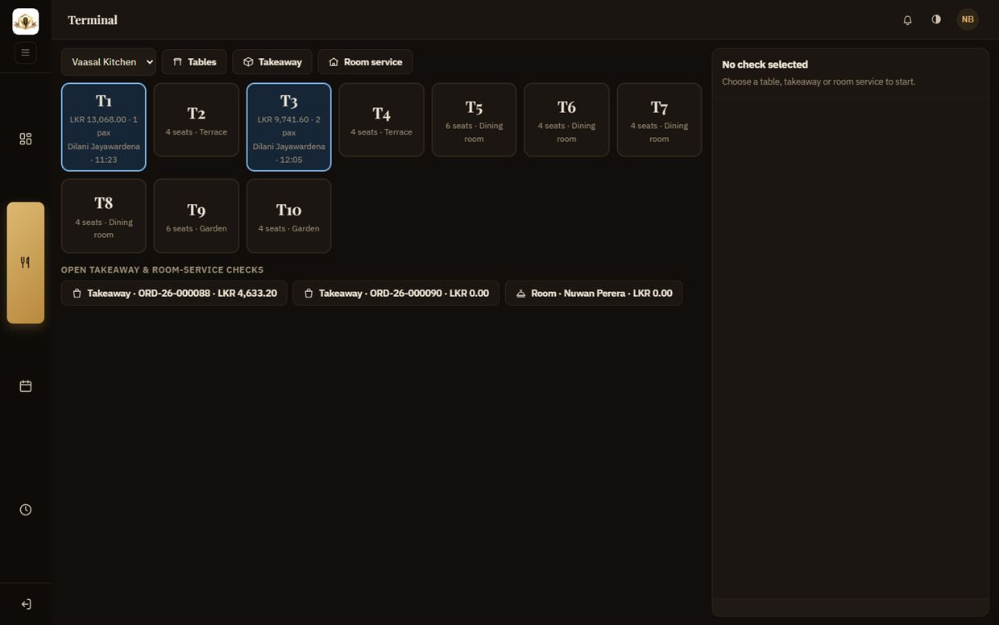
படம் 32 · Figure 32 — பணியாளரின் மேசை வரைபடம் (Vaasal Kitchen). screenshots/30_pos_floor_plan.png · 1440×900 px
11.2ஆர்டர் எடுத்தல் (Waiter)
காலி மேசை T6-ஐ அழுத்தி விருந்தினர் எண்ணிக்கை (covers) = 4.
வகைகள் (Breakfast, Starters, Mains, Desserts, Drinks …) மூலம் அல்லது தேடல் மூலம் உணவுகளைச் சேர்க்கவும். கட்டாய விருப்பத் தேர்வுகள் இல்லாமல் சேர்க்க முடியாது ("Choose at least 1 option(s) for Spice level").
குறிப்புகள் தேவையெனில் Notes.
Send — ஒவ்வொரு நிலையத்துக்கும் தனி KOT (சமையலறை, bar) உருவாகும்.
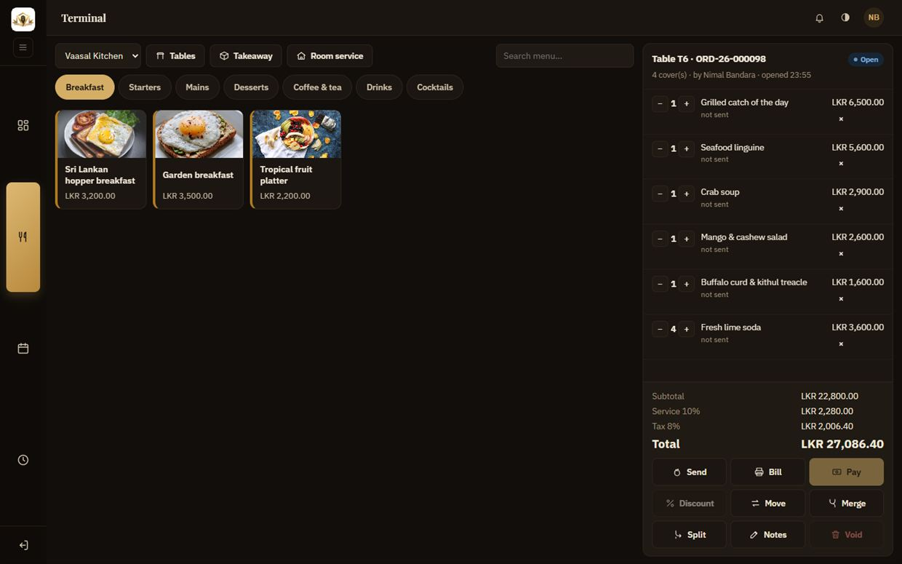
படம் 33 · Figure 33 — மேசை T6, 4 விருந்தினர்கள்: சமையலறைக்கு அனுப்பும் முன் ஆர்டர். screenshots/05_pos_table.png · 1440×900 px
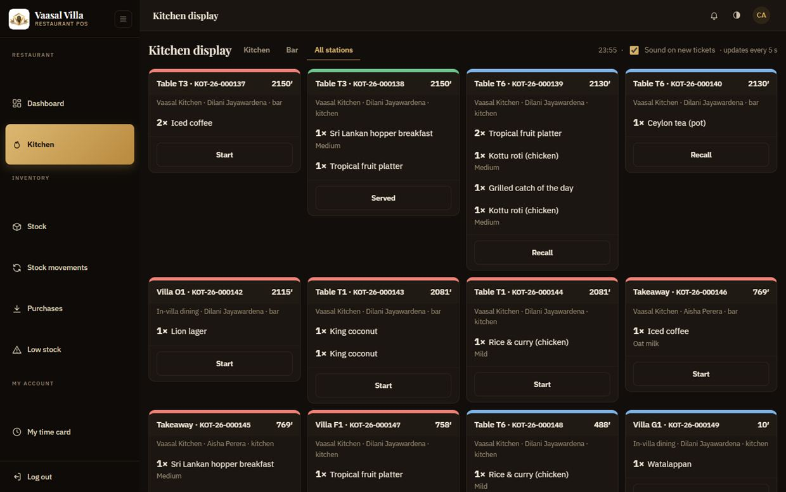
படம் 34 · Figure 34 — T6-க்கான சமையலறை மற்றும் bar tickets. screenshots/31_kitchen_kot_t6.png · 1440×900 px
பிற மேசைச் செயல்கள் (சோதிக்கப்பட்டவை)
Move — check-ஐ வேறு மேசைக்கு மாற்றுதல் (T1 → T2).
Merge — இரண்டு மேசைகளின் checks-ஐ ஒன்றாக்குதல்.
Split — சில உணவுகளைப் புதிய check-க்கு மாற்றுதல்.
Discount, Void — அனுமதியுள்ளவர் மட்டும், காரணத்துடன்; பதிவில் இருக்கும்.
மேசை முன்பதிவு நேரத்துக்கு முன்பின் மற்றொரு முன்பதிவு மோதினால் நிராகரிக்கப்படும் ("Table T1 is already reserved…").
11.3பில் மற்றும் பணம் செலுத்துதல் (Cashier)
check-ஐத் திறந்து Bill — 80 mm பில் அச்சிடப்படும்; நிலை "Bill printed".
Pay அழுத்தினால் "Take payment" சாளரம் திறக்கும்; நிலுவைத் தொகையுடன் ஒரு Cash வரி தானாக வரும்.
Tendered-இல் விருந்தினர் கொடுத்த தொகையை (30000) உள்ளிடுங்கள் அல்லது 1,000 / 5,000 / 10,000 / 20,000 / Exact பொத்தான்களைப் பயன்படுத்துங்கள். மீதி (Change) தானாகக் கணக்கிடப்படும்.
பல முறைகளில் பிரித்துச் செலுத்த Card / Bank transfer / Digital-QR / Online / Charge to villa வரிகளைச் சேர்க்கலாம்.
Complete payment — பற்றுச்சீட்டு, மேசை மீண்டும் காலி.
படம் 35 · Figure 35 — விருந்தினர் பில் (80 mm). screenshots/34_pos_bill.png · 1440×900 pxபடம் 36 · Figure 36 — பணமாகச் செலுத்துதல்: நிலுவை LKR 27,086.40, கொடுத்தது 30,000, மீதி 2,913.60. (இரண்டாவது வெற்று "Cash" வரி படம் எடுத்த ஸ்கிரிப்ட் கூடுதலாக அழுத்தியதால் வந்தது — தேவையில்லை; தொகை 0 என்பதால் பாதிப்பில்லை.) screenshots/06_pos_payment.png · 1440×900 px
உதாரணம் B — கணினி கணக்கிட்ட தொகை (ORD-26-000098, மேசை T6, 4 பேர்)
படம் 38 · Figure 38 — பணம் செலுத்திய பின் T6 மீண்டும் காலி. screenshots/36_table_released.png · 1440×900 px
பணம் செலுத்தும் விதிகள் (சோதிக்கப்பட்டவை)
வெற்று check-க்கு பணம் வாங்க முடியாது ("This check is empty…") — இந்த QA-இல் சரிசெய்யப்பட்டது.
நிலுவையைவிட அதிகமான கொடுப்பனவுகள் நிராகரிக்கப்படும் (பணத்தில் மட்டும் "Tendered" மூலம் மீதி தரலாம்).
பகுதிப் பணம் செலுத்தினால் மேசை "occupied" ஆகவே இருக்கும்.
மூடிய check-க்கு மீண்டும் பணம் வாங்க முடியாது.
Cash, Card, Bank transfer, Digital முறைகளுக்கு அந்த outlet-இல் உங்கள் ஷிப்ட் திறந்திருக்க வேண்டும் (அத்தியாயம் 12). "Charge to villa"-க்கு ஷிப்ட் தேவையில்லை.
12காசாளர் ஷிப்ட் மற்றும் நாள் முடிவுCashier shift, drawer and day-end closing
ஒவ்வொரு காசாளரும் ஒவ்வொரு outlet-க்கும் தனி ஷிப்ட் திறக்க வேண்டும். ஷிப்ட் திறக்கும்போது drawer-இல் உள்ள float தொகையைப் பதிய வேண்டும்; நாள் முடிவில் பணத்தை எண்ணி ஷிப்டை மூட வேண்டும்.
தெரிந்த குறைபாடு — இரண்டாவது outlet ஷிப்ட்
கணினி ஒவ்வொரு outlet-க்கும் தனி ஷிப்டை அனுமதிக்கிறது; ஆனால் Shifts & drawer பக்கம் உங்களுக்கு ஏதாவது ஒரு ஷிப்ட் திறந்திருந்தால் "Open a shift" படிவத்தைக் காட்டாது. இந்தச் சோதனையில் காசாளருக்கு முந்தைய நாளின் In-villa dining ஷிப்ட் திறந்திருந்ததால், Vaasal Kitchen-இல் பணம் வாங்க முதலில் அதை Day-end மூலம் மூட வேண்டியிருந்தது ("Open a cashier shift before taking card payments").
12.1நாள் முடிவு (Day-end closing)
Shifts & drawer → Day-end closing.
கணினி எதிர்பார்க்கும் தொகைகள்: float + பண விற்பனை + cash in − cash out − refund = Expected cash; அட்டை, வங்கி, digital, அறைக் கணக்கு மொத்தங்கள்.
நோட்டுகள்/நாணயங்களை வகைவாரியாக எண்ணலாம் (5,000 … 1) அல்லது Counted cash-இல் நேரடியாக உள்ளிடலாம். வேறுபாடு (Variance) தானாகத் தெரியும்.
வேறுபாட்டுக்கான விளக்கத்தை மேலாளருக்குக் குறிப்பாக எழுதுங்கள்.
உறுதிப்படுத்தல் பெட்டியை டிக் செய்து Close shift. ஷிப்ட் பூட்டப்படும்; A4 அல்லது thermal அறிக்கை அச்சிடலாம்; உணவக மேலாளர் அதை அங்கீகரிப்பார் அல்லது flag செய்வார்.
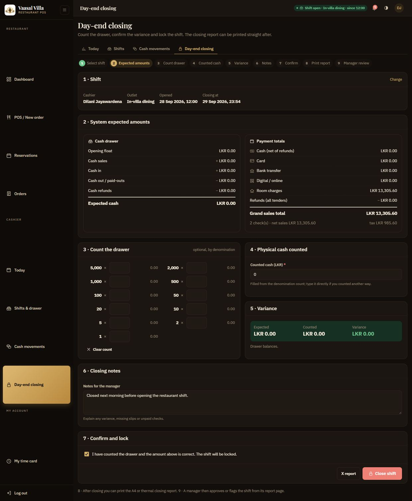
படம் 39 · Figure 39 — நாள் முடிவு: In-villa dining ஷிப்ட் — எதிர்பார்த்த பணம் 0.00, எண்ணியது 0.00, வேறுபாடு 0.00; அறைக் கணக்குகள் LKR 13,305.60 (3,207.60 + 10,098.00). screenshots/81_day_end_count.png · 1440×1751 px
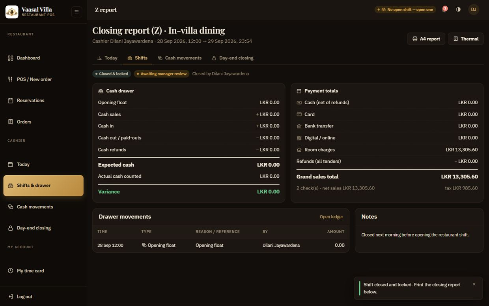
படம் 40 · Figure 40 — ஷிப்ட் மூடப்பட்டு பூட்டப்பட்டது; மேலாளர் மீளாய்வுக்குக் காத்திருக்கிறது. screenshots/82_shift_closed.png · 1440×900 px
12.2புதிய ஷிப்ட் திறத்தல்
Shifts & drawer → Open a shift: Outlet = Vaasal Kitchen, Opening float = 10,000.
Open shift. மேல் பட்டியில் "Shift open · Vaasal Kitchen · since HH:MM" என்ற பச்சைக் குறி தெரியும்.
ஷிப்டின்போது பணம் வெளியே/உள்ளே சென்றால் (ice வாங்குதல், safe drop) Record movement மூலம் காரணத்துடன் பதியுங்கள்.
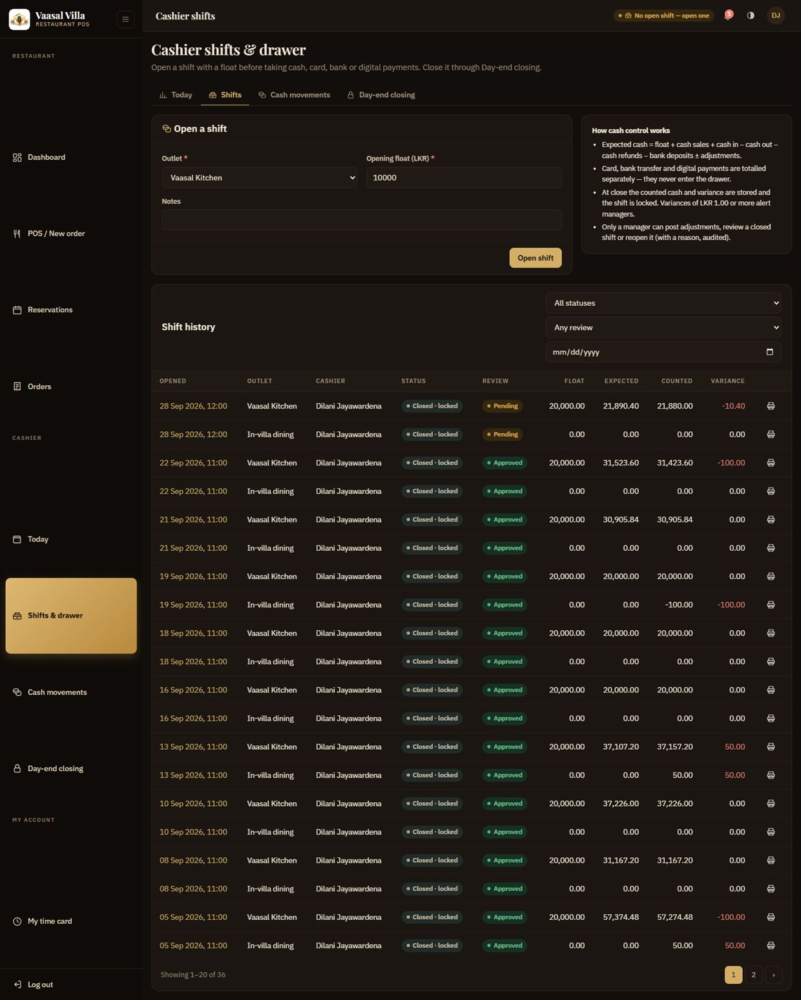
படம் 41 · Figure 41 — Vaasal Kitchen-இல் LKR 10,000 float உடன் ஷிப்ட் திறத்தல். screenshots/32_open_shift.png · 1440×1796 px
13உணவக மேலாளர் பகுதிRestaurant back office: dashboard, reservations, menu, sales, inventory
உணவக மேலாளர் (Restaurant Manager) உள்நுழைந்ததும் POS dashboard திறக்கும். இதில் இன்றைய விற்பனை, திறந்த checks, மேசைப் பயன்பாடு, அதிகம் விற்ற உணவுகள், ஷிப்ட் நிலை போன்றவை தரவுத்தளத்திலிருந்து நேரடியாகக் கணக்கிடப்படுகின்றன.
படம் 47 · Figure 47 — அதே dashboard கைபேசியில். screenshots/71_mobile_pos_dashboard.png · 390×3277 px · மீதி 3 பகுதி முழு அளவுப் படத்தில்
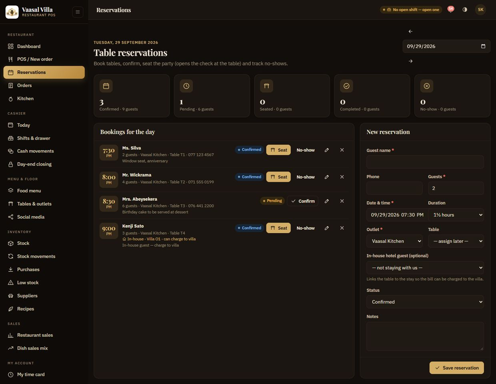
படம் 48 · Figure 48 — மேசை முன்பதிவுகள் — இரட்டை முன்பதிவு தடுக்கப்படும்; வந்ததும் "Seat" மூலம் check திறக்கும். screenshots/39_table_reservations.png · 1440×1112 px
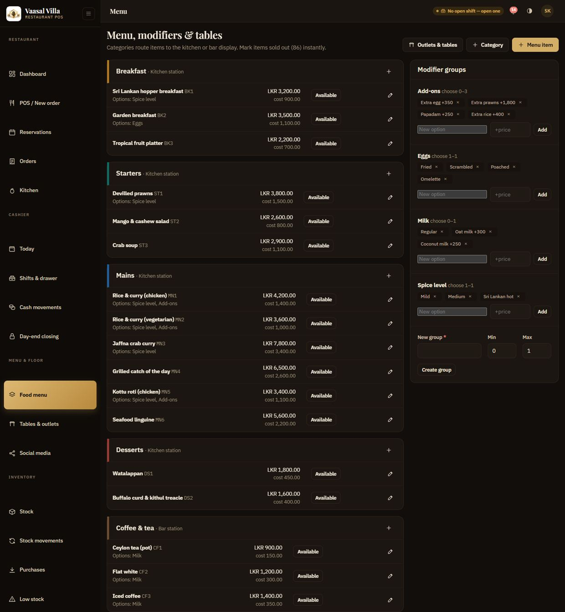
படம் 49 · Figure 49 — உணவு மெனு: வகைகள், விலை, நிலையம் (kitchen/bar), படம், விருப்பத் தேர்வுகள், கிடைக்கும் நிலை. screenshots/43_food_menu.png · 1440×2155 px · மீதி 1 பகுதி முழு அளவுப் படத்தில்
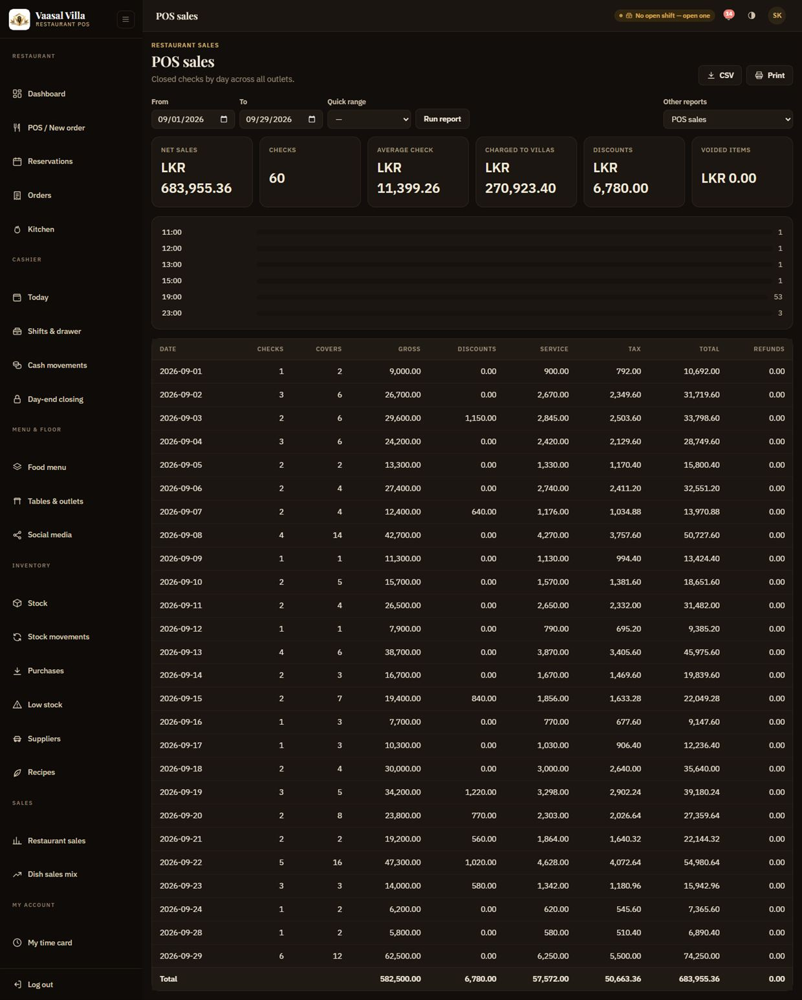
படம் 50 · Figure 50 — உணவக விற்பனை அறிக்கை. screenshots/42_pos_sales.png · 1440×1794 px
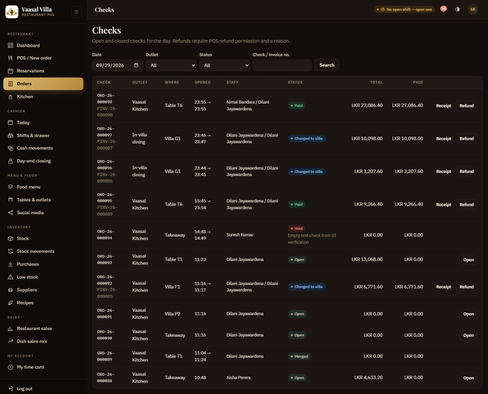
படம் 51 · Figure 51 — ஆர்டர் வரலாறு. screenshots/44_orders_history.png · 1440×1164 px
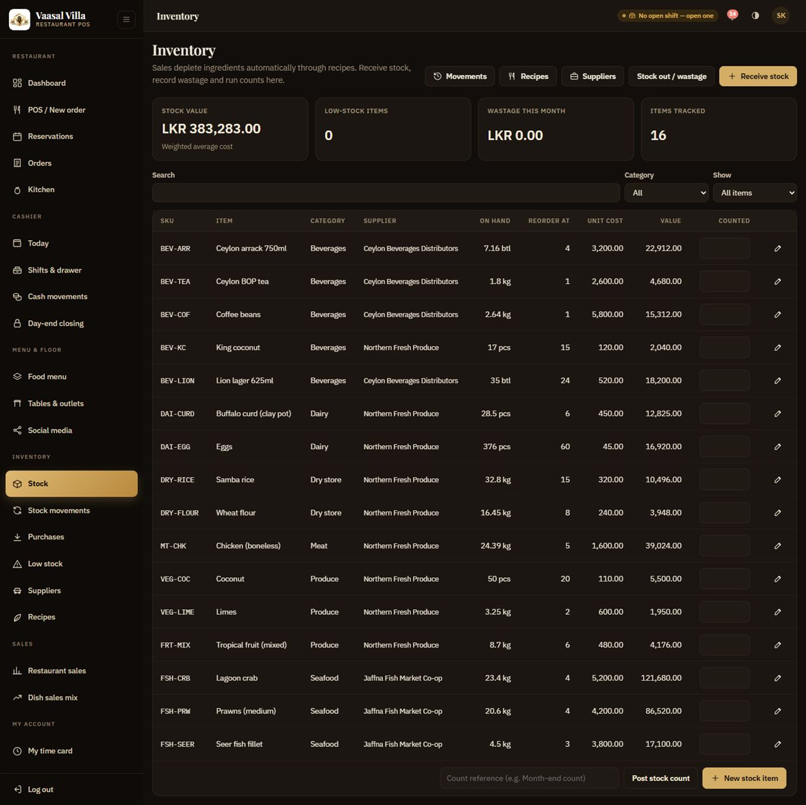
படம் 52 · Figure 52 — கையிருப்பு (Inventory): பொருட்கள், குறைந்த கையிருப்பு; விற்பனையின்போது recipe மூலம் தானாகக் கழிக்கப்படும் (regression test-இல் சோதிக்கப்பட்டது). screenshots/45_pos_inventory.png · 1440×1437 px
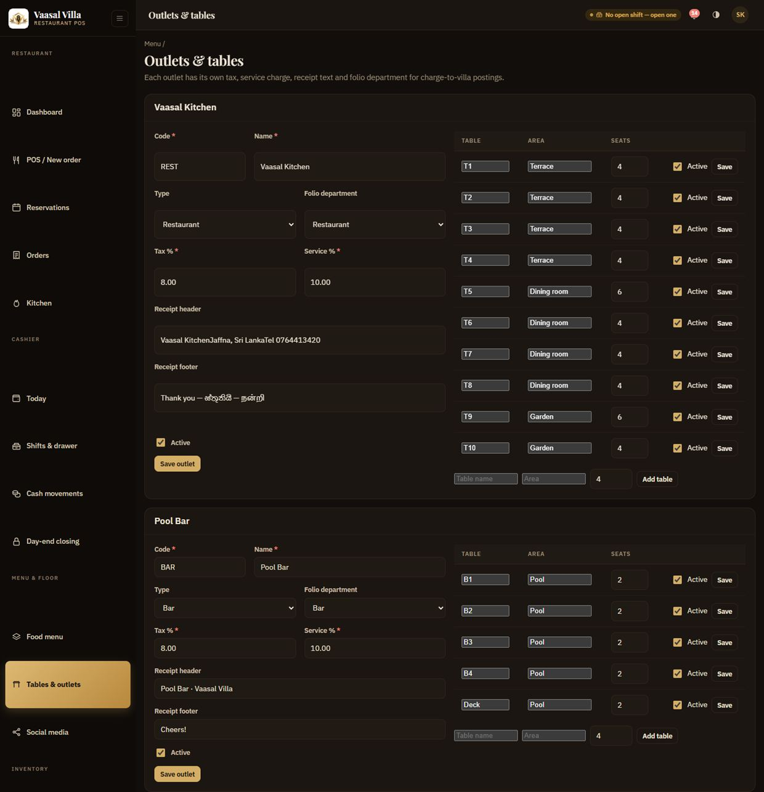
படம் 53 · Figure 53 — Outlets: வரி 8%, சேவைக் கட்டணம் 10%, பற்றுச்சீட்டுத் தலைப்பு. screenshots/46_pos_outlets.png · 1440×2577 px · மீதி 1 பகுதி முழு அளவுப் படத்தில்
14சாவி அட்டைகள் மற்றும் அணுகல் கட்டுப்பாடுKey cards & RFID access — SIMULATION ONLY in this installation
முக்கியம்: இது சிமுலேஷன்
இந்தக் கணினியில் LOCK_DRIVER=simulator மற்றும் RFID_SIMULATOR=true. எந்த உண்மையான கதவுப் பூட்டோ, RFID reader-ஓ, card encoder-ஓ இணைக்கப்படவில்லை; lock-bridge/ கோப்புறையில் உள்ள vendor adapter ஒரு மாதிரி (stub) மட்டுமே. கீழே காட்டப்படும் "Access Granted / Denied" முடிவுகள் அனைத்தும் கணினியின் அனுமதி விதிகளைச் சோதிக்கும் சிமுலேஷன் முடிவுகள்; உண்மையான கதவுகள் திறக்கப்படவில்லை.
Key cards பக்கத்தில் விருந்தினர் அட்டைகள், பணியாளர் அட்டைகள் (badges), தொலைந்த அட்டைகள், ஒதுக்குதல்/ரத்து செய்தல், அணுகல் பதிவுகள், RFID சாதனங்கள், simulator, Lock bridge ஆகிய தாவல்கள் உள்ளன.
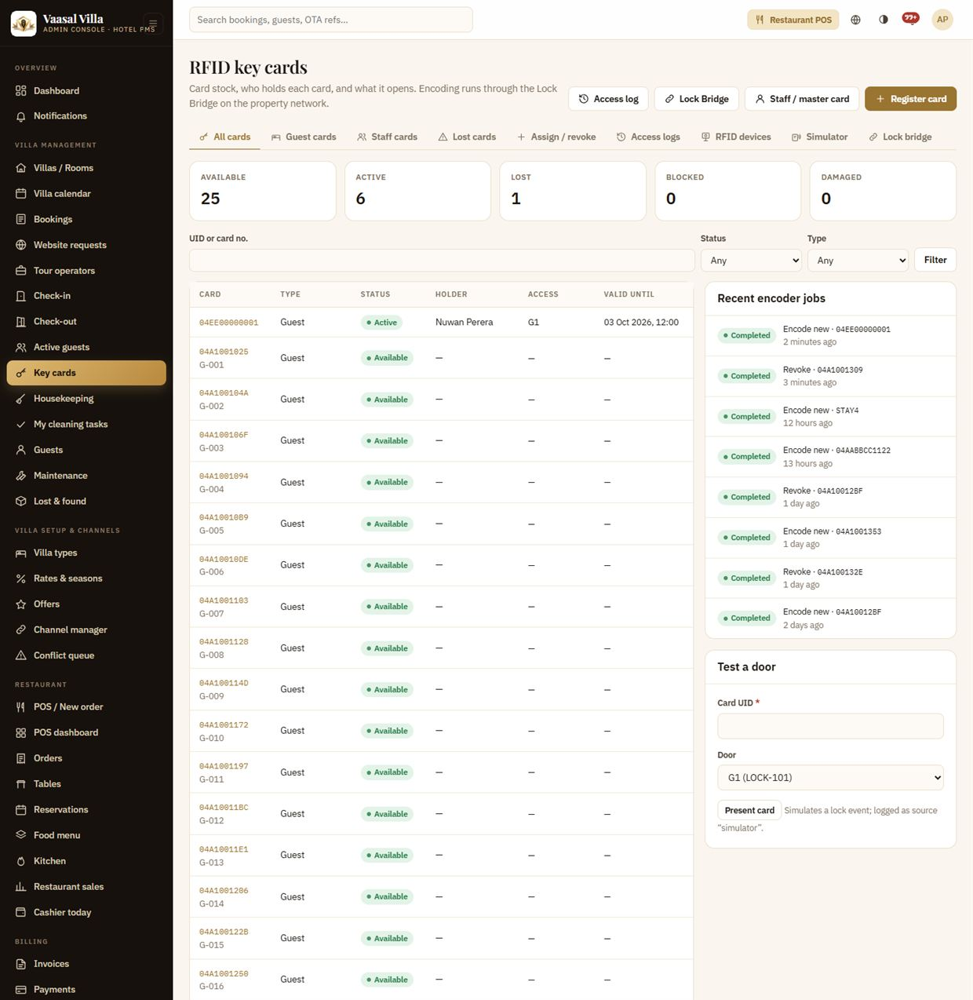
படம் 54 · Figure 54 (1/2) — சாவி அட்டைகள் — எல்லா அட்டைகளும் நிலையுடன் (LOCK_DRIVER=simulator).
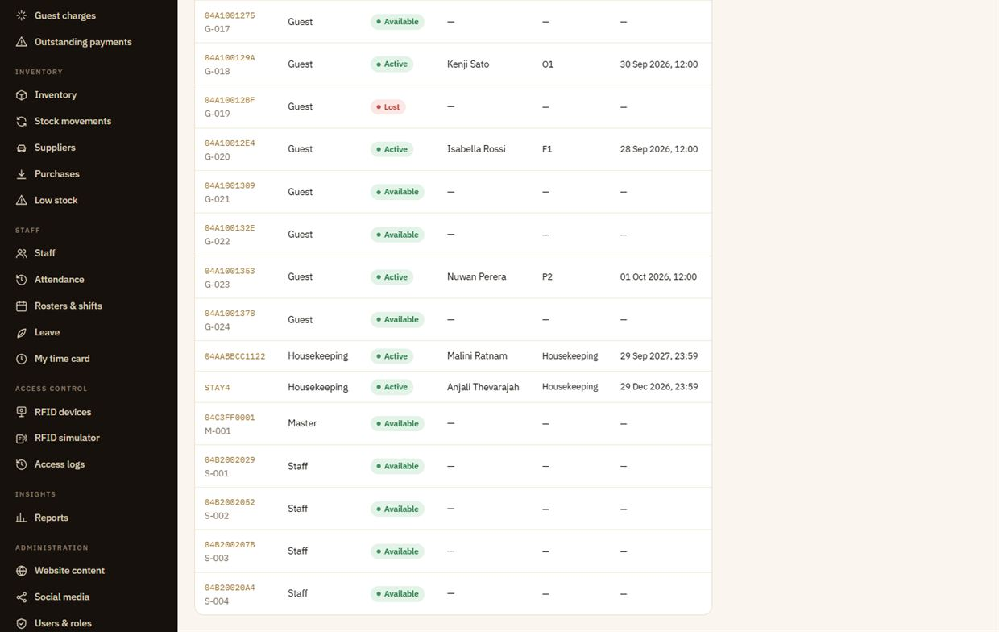
படம் 54 · Figure 54 (தொடர்ச்சி 2/2) — சாவி அட்டைகள் — எல்லா அட்டைகளும் நிலையுடன் (LOCK_DRIVER=simulator). screenshots/12_key_cards.png · 1440×2389 px
அட்டை விதிகள் (சிமுலேஷனில் சோதிக்கப்பட்டவை)
விருந்தினர் அட்டை: தமது வில்லா + பொது இடங்கள் (Main gate, Lobby, Pool, Restaurant, Gym) மட்டும். வேறு வில்லா → மறுப்பு ("Not valid for villa G1").
ஒரே UID-ஐ இரண்டு முறை பதிய முடியாது.
Checkout அல்லது "Revoke" → அட்டை செல்லாது ("Card revoked"). "Lost" எனக் குறித்தால் உடனடியாக மறுக்கப்படும்; புதிய அட்டை வழங்கலாம்.
செல்லுபடிக் காலம் முடிந்த அட்டை மறுக்கப்படும் ("Card expired"); தெரியாத அட்டை → "Unknown card".
பணியாளர் badge அவர்களின் துறைக்குரிய பகுதிகளைத் திறக்கும்; time-clock சாதனத்தில் தட்டினால் வருகையும் பதிவாகும்.
படம் 55 · Figure 55 — SIMULATION: Nuwan Perera-வின் அட்டை (04EE00000001) G1 கதவில் — "Access Granted, Guest of villa G1". screenshots/47_rfid_simulator.png · 1440×1655 pxபடம் 56 · Figure 56 — அணுகல் பதிவுகள் (Access logs) — ஒவ்வொரு ஸ்கேனும், முடிவும், காரணமும். screenshots/48_access_logs.png · 1440×2929 px · மீதி 1 பகுதி முழு அளவுப் படத்தில்
15இரவுத் தணிக்கை (Night audit)What it does, who runs it, and what to check
இரவுத் தணிக்கை அன்றைய வணிக நாளை (business date) முடிக்கிறது. இதை Hotel Manager அல்லது Administrator மட்டுமே இயக்க முடியும் (வரவேற்பாளருக்கு 403).
இரவுத் தணிக்கை செய்யும் வேலைகள் (code மூலம் உறுதிப்படுத்தப்பட்டது)
#
செயல்
விவரம்
1
அறை இரவுக் கட்டணங்கள்
தங்கியுள்ள ஒவ்வொரு விருந்தினருக்கும் வணிக நாள் வரையிலான (அது உட்பட) இரவுகளை 10% சேவை + 8% வரியுடன் folio-வில் பதிகிறது. ஏற்கனவே பதிந்த இரவை மீண்டும் பதியாது — இரண்டு முறை இயக்கினாலும் இரட்டைக் கட்டணம் இல்லை (சோதிக்கப்பட்டது).
2
No-show
வருகைத் தேதி கடந்தும் check-in செய்யாத "confirmed" முன்பதிவுகளை No-show ஆக்குகிறது.
3
Website holds
கட்டண நேரம் முடிந்த இணையதள holds-ஐ விடுவிக்கிறது.
4
சாவி அட்டைகள்
செல்லுபடிக் காலம் முடிந்த அட்டைகளை expire செய்கிறது.
5
Stay-over பணிகள்
அடுத்த நாளுக்கான தங்கியுள்ள வில்லாச் சுத்தப் பணிகளை உருவாக்குகிறது.
6
பணியாளர் வருகை
முந்தைய நாளுக்கு வராதவர்களை "absent" எனக் குறிக்கிறது.
Front desk → Run night audit.
"Run night audit now?" உறுதிப்படுத்தல் சாளரத்தில் Confirm.
முடிவுச் செய்தி: எத்தனை இரவுகள் பதிந்தன, no-shows, expire ஆன holds/cards, stay-over பணிகள். மேலே "Last night audit: …" என்று நேரமும் தெரியும்.
சில folios-ஐத் திறந்து அறைக் கட்டணம் சரியாகப் பதிந்ததா எனச் சரிபாருங்கள்.
படம் 57 · Figure 57 — "Run night audit now?" உறுதிப்படுத்தல். screenshots/49_night_audit_confirm.png · 1440×900 pxபடம் 58 · Figure 58 — இரவுத் தணிக்கை முடிவு (29.09.2026 23:49): 5 room nights posted, 3 no-shows, 0 holds, 1 card expired, 2 stay-over tasks. screenshots/13_night_audit.png · 1440×923 pxபடம் 59 · Figure 59 — தணிக்கைக்குப் பின் Nuwan-இன் folio: 29 செப் இரவு 30,500 + சேவை 3,050 + வரி 2,684 = 36,234.00 சேர்ந்தது. screenshots/50_folio_after_audit.png · 1440×1696 px
கவனிக்க வேண்டியவை
தானியங்கி இயக்கம்: கணினி தினமும் 02:00-க்கு இரவுத் தணிக்கையை இயக்கும்படி அமைக்கப்பட்டுள்ளது. ஆனால் அதற்கு Windows Task Scheduler-இல் ஒவ்வொரு நிமிடமும் php artisan schedule:run இயங்க வேண்டும். இந்தக் கணினியில் அப்படி ஒரு task இல்லை — அதனால் இப்போது கைமுறையாக மட்டுமே இயங்கும் (holds, அட்டை expiry-யும் அப்படியே).
02:00-க்கு இயங்கும்போது வணிக நாள் = அந்த நாளின் தேதி. அதனால் அந்த இரவின் கட்டணம் விருந்தினர் தங்குவதற்கு முன்பே பதியும். நள்ளிரவுக்கு முன் கைமுறையாக இயக்குவது பாதுகாப்பானது (இந்த QA-இல் 23:49-க்கு இயக்கப்பட்டது).
கடைசி இயக்கத்தின் சுருக்கம் மட்டுமே சேமிக்கப்படுகிறது; ஒவ்வொரு இயக்கத்துக்கும் audit log பதிவு இல்லை; வணிக நாள் பூட்டப்படுவதில்லை.
16அறிக்கைகள்Reports — 15 report types, date range, CSV export
Reports பக்கத்தில் அறிக்கையைத் தேர்வு செய்து, தேதி வரம்பைக் கொடுத்து பார்க்கலாம்; Export CSV மூலம் Excel-க்கு எடுக்கலாம். ஒவ்வொரு அறிக்கையும் அனுமதிக்கு உட்பட்டது.
அறிக்கை
உள்ளடக்கம்
அனுமதி
Bookings
காலப்பகுதியின் முன்பதிவுகள்
Operational
Occupancy, ADR & RevPAR
நிரம்பல் %, சராசரி அறை விலை, கிடைக்கும் அறைக்கு வருமானம்
Operational
Revenue by department
அறை, அறை சேவை, உணவகம், சலவை … வாரியாக வருமானம்
Financial
Payments received / Outstanding balances
பெற்ற கொடுப்பனவுகள் / நிலுவைகள்
Financial
Guest statistics
நாடு, திரும்பி வரும் விருந்தினர்
Operational
OTA & channel production / Tour operators & commission
படம் 60 · Figure 60 — அறிக்கைகள் முகப்பு. screenshots/60_reports.png · 1440×900 pxபடம் 61 · Figure 61 — Occupancy, ADR & RevPAR அறிக்கை. screenshots/61_report_occupancy.png · 1440×2112 px · மீதி 1 பகுதி முழு அளவுப் படத்தில்
பிரிப்பு
உணவக ஊழியர்கள் ஹோட்டல் அறிக்கைகளைத் திறக்க முடியாது; அவர்களுக்கு POS-இன் Restaurant sales பக்கம் மட்டும் (இந்த QA-இல் கண்டுபிடிக்கப்பட்டு சரிசெய்யப்பட்ட கசிவு).
8 வில்லாக்கள்: வகை, கொள்ளளவு, பூட்டு எண், வீட்டுப் பராமரிப்பு மற்றும் பழுது நிலை.
Guests
விருந்தினர் விவரங்கள், தங்கல் வரலாறு; அடையாள எண் மறைக்கப்பட்டு காட்டப்படும்.
Website requests
இணையதள விசாரணைகள் (enquiries) — பார்த்து, நிலையை மாற்றலாம் (உ-ம்: பதில் அளிக்கப்பட்டது). முன்பதிவாக்க வேண்டுமெனில் New booking மூலம் தனியாக உருவாக்க வேண்டும் (தானியங்கி மாற்றம் இல்லை).
Tour operators
Tour operator நிறுவனங்கள், ஒப்பந்த விலைகள், credit limit, கட்டணக் காலம் (30 நாள்); partner portal கணக்குகள்; operator முன்பதிவுகளின் அறைக் கட்டணம் city ledger-க்குச் செல்லும்.
Maintenance
பழுதுப் பணிகள்; "Out of order" ஆன வில்லா விற்பனையிலிருந்து நீக்கப்படும்.
18நிர்வாக அமைப்புகள்Administrator: users, roles, settings, social media, website, audit, staff
Users — பயனர்களைச் சேர்த்தல், பாத்திரம் ஒதுக்குதல், செயலிழக்கச் செய்தல், பூட்டை நீக்குதல். நிர்வாகி அல்லாதவர் Administrator பாத்திரத்தை வழங்க முடியாது (சோதிக்கப்பட்டது).
Roles — ஒவ்வொரு பாத்திரத்துக்குமான அனுமதிகள் (62 அனுமதிகள்).
Settings — பெயர், தொடர்பு, வரி 8%, சேவைக் கட்டணம் 10%, check-in 14:00, check-out 11:00, இணையதளத்தில் காட்டும் நாணய மாற்று விகிதங்கள். API keys, கடவுச்சொற்கள் .env கோப்பில் மட்டுமே — திரையில் இல்லை.
Social media — Facebook, Instagram, WhatsApp, YouTube, TikTok இணைப்புகள் (இணையதள footer).
Website — இணையதள உள்ளடக்கம், படங்கள் (media library).
Audit log — யார், எப்போது, என்ன மாற்றினார்கள்; உள்நுழைவுப் பதிவுகள்.
Staff — பணியாளர்கள், roster, வருகை, விடுப்பு.
படம் 69 · Figure 69 — பயனர்கள். screenshots/62_users.png · 1440×1271 pxபடம் 70 · Figure 70 — பாத்திரங்கள். screenshots/63_roles.png · 1440×4907 px · மீதி 2 பகுதி முழு அளவுப் படத்தில்படம் 71 · Figure 71 — சொத்து அமைப்புகள் — ரகசியத் தகவல் எதுவும் திரையில் இல்லை. screenshots/64_settings.png · 1440×1315 pxபடம் 72 · Figure 72 — சமூக ஊடக இணைப்புகள். screenshots/65_social_media.png · 1440×951 pxபடம் 73 · Figure 73 — இணையதள உள்ளடக்கம். screenshots/66_website_content.png · 1440×1461 pxபடம் 74 · Figure 74 — Audit log. screenshots/67_audit_log.png · 1440×2827 px · மீதி 1 பகுதி முழு அளவுப் படத்தில்படம் 75 · Figure 75 — பணியாளர் வருகை. screenshots/68_staff_attendance.png · 1440×2975 px · மீதி 1 பகுதி முழு அளவுப் படத்தில்படம் 76 · Figure 76 — Roster / shifts. screenshots/69_staff_roster.png · 1440×1434 px
Settings — சிறு குறை
"Integrations" பகுதியில் Channel manager வரிக்கு மதிப்பு எதுவும் காட்டப்படவில்லை (வெற்று). உண்மையில் அது இணைக்கப்படவில்லை (CHANNEL_DRIVER=null).
19கைபேசி மற்றும் டேப்லெட்Responsive use on phones and tablets
எல்லாப் பக்கங்களும் கைபேசி (390 px) மற்றும் டேப்லெட் (768 px) அகலத்தில் சோதிக்கப்பட்டன. பக்கப்பட்டி ☰ பொத்தானின் கீழ் மறைகிறது. அறைப் பணியாளர்கள் கைபேசியில் பணிகளை ஏற்று, சரிபார்ப்புப் பட்டியலை டிக் செய்யலாம் (அத்தியாயம் 10); மேலாளர்கள் dashboard-ஐப் பார்க்கலாம் (அத்தியாயம் 13).
படம் 77 · Figure 77 — முன் மேசை டேப்லெட்டில் (768 px). screenshots/72_tablet_frontdesk.png · 768×1024 px
20பிழைச் செய்திகள் மற்றும் தீர்வுகள்Troubleshooting
செய்தி / நிலை
காரணம்
என்ன செய்வது
403 — Forbidden
உங்கள் பாத்திரத்துக்கு அந்தப் பக்கத்துக்கு அனுமதி இல்லை
சரியான கணக்கில் உள்நுழையுங்கள் அல்லது நிர்வாகியிடம் கேளுங்கள்
404 — Not found
பதிவு இல்லை/நீக்கப்பட்டது, தவறான முகவரி
பட்டியலிலிருந்து மீண்டும் திறக்கவும்
Your session has ended …
30 நிமிடச் செயலின்மை, வேறு கணக்கு உள்நுழைவு, வேறு tab-இல் logout
மீண்டும் உள்நுழையுங்கள் — அதே பக்கத்துக்குத் திரும்புவீர்கள்
419 — Page expired
படிவம் நீண்ட நேரம் திறந்திருந்தது (CSRF token காலாவதி)
பக்கத்தைப் புதுப்பித்து மீண்டும் சமர்ப்பிக்கவும்
The username/email or password is incorrect.
தவறான பெயர்/கடவுச்சொல்
கவனமாக மீண்டும்; 5 தவறுகளுக்குப் பின் 15 நிமிடப் பூட்டு
This account is temporarily locked …
5 தவறான முயற்சிகள்
காட்டிய நேரம் வரை காத்திருங்கள் அல்லது நிர்வாகி பூட்டை நீக்கலாம்
21பொது இணையதளம்Public website, online booking, currency and weather
விருந்தினர்கள் இணையதளத்தில் வில்லாக்கள், சேவைகள், சலுகைகள், படங்களைப் பார்த்து, தேதிகளைக் கொடுத்து முன்பதிவு செய்யலாம். விலைகள் LKR-இல் சேமிக்கப்படுகின்றன; நாணயத் தேர்வு (USD, EUR, GBP, INR, AUD, AED) காட்சிக்கு மட்டுமே. யாழ்ப்பாணத்தின் நேரடி வானிலை SVG குறிகளுடன் காட்டப்படுகிறது.
படம் 80 · Figure 80 (1/2) — இணையதள முகப்பு — யாழ்ப்பாண வானிலையுடன். படம் 80 · Figure 80 (தொடர்ச்சி 2/2) — இணையதள முகப்பு — யாழ்ப்பாண வானிலையுடன். screenshots/78_website_home.png · 1440×7000 px · மீதி 3 பகுதி முழு அளவுப் படத்தில்படம் 81 · Figure 81 — இணையதள முன்பதிவுப் பக்கம் (20–23 அக், 2 பெரியவர்கள்). screenshots/79_website_booking.png · 1440×2878 px · மீதி 1 பகுதி முழு அளவுப் படத்தில்படம் 82 · Figure 82 — இணையதளம் கைபேசியில். screenshots/80_website_mobile.png · 390×7000 px · மீதி 7 பகுதி முழு அளவுப் படத்தில்
இணையதளக் கட்டணம்
இணையதள முன்பதிவு கட்டணம் செலுத்தும் வரை "hold" ஆக இருக்கும். கட்டணம் sandbox (சோதனை) gateway மூலம் மட்டுமே சோதிக்கப்பட்டது — உண்மையான அட்டைப் பணம் பெறப்படவில்லை. Stripe போன்ற உண்மையான gateway-க்கு keys தேவை.
22நாள்தோறும் சரிபார்ப்புப் பட்டியல்கள்Daily checklists by role
வரவேற்பாளர்
காலை: Front desk → Arrivals; வில்லாக்கள் Ready-ஆ?
Departures: திறந்த உணவக checks உண்டா?
Check-in: ID, சாவி அட்டை, முற்பணம்
Checkout: நிலுவை 0, விலைப்பட்டியல் அனுப்புதல்
தொலைந்த அட்டை → உடனே "Lost"
Hotel Manager
Dashboard: நிரம்பல், நிலுவைகள், conflicts
விலை override காரணங்களை History-இல் சரிபாருங்கள்
நள்ளிரவுக்கு முன் இரவுத் தணிக்கை
No-shows, outstanding அறிக்கை
காசாளர்
ஷிப்ட் திறத்தல் (float எண்ணி)
Room service → Charge to villa
Settlement அறிவிப்புகளுக்கு உடனடிப் பதில்
நாள் முடிவில் பணம் எண்ணி Day-end
பணியாளர் (Waiter) / சமையலறை
சரியான covers, கட்டாய விருப்பத் தேர்வுகள்
Send-க்கு முன் ஆர்டரைச் சரிபாருங்கள்
சமையலறை: Start → Ready → Served — ஒவ்வொன்றையும் குறிக்கவும்
அறைப் பணியாளர்
My cleaning tasks: Accept → Start
சரிபார்ப்புப் பட்டியல் முழுதும்; linen எண்ணிக்கை
பழுது / தொலைந்த பொருள் பதிவு
HK Supervisor / Restaurant Manager
Inspection காத்திருப்பவை → Approve/Reject
பழைய stay-over பணிகளை மூடுதல்
உணவகம்: மூடிய ஷிப்டுகளை மீளாய்வு, variance
குறைந்த கையிருப்பு, மேசை முன்பதிவுகள்
23QA சோதனைச் சுருக்கம்QA summary in Tamil — full details in VAASAL_VILLA_QA_TEST_REPORT.pdf
257
மொத்த சோதனை வழக்குகள்
254
வெற்றி (PASS)
3
தடைப்பட்டவை (BLOCKED — வெளிச் சேவை இல்லை)
0
தோல்வி (FAIL) — இறுதி ஓட்டத்தில்
சோதனை வகை
எண்ணிக்கை
முடிவு
தானியங்கி QA சோதனைகள் (tests/QA/QaAuditTest.php)
155
153 PASS, 2 BLOCKED
நேரடி HTTP சோதனைகள் (XAMPP)
20
19 PASS, 1 BLOCKED
உலாவி நடைப்பயணம் (82 திரைப்படங்கள்)
82
82 PASS
Regression test suite
51
51 PASS (1,668 assertions)
இந்த QA-இல் கண்டுபிடித்துச் சரிசெய்யப்பட்டவை
நேர மண்டலம் — கணினி UTC-யில் ஓடியது (.env-இல் Asia/Colombo இருந்தும்). இலங்கை நேரம் 00:00–05:30 இடையே "இன்று" தவறாக இருந்தது. சரிசெய்யப்பட்டது.
"Unauthenticated" — POS-இல் அமர்வு முடிந்தால் வெறும் சொல். இப்போது தெளிவான செய்தி + மீண்டும் உள்நுழைந்து அதே பக்கம்.
பிரிப்புக் கசிவு — உணவக ஊழியர்கள் ஹோட்டல் அறிக்கைப் பக்கத்தைத் திறக்க முடிந்தது. மூடப்பட்டது.
வெற்று check-க்குப் பணம் — தடுக்கப்பட்டது.
உணவக விற்பனைப் பக்கம் — சில பாத்திரங்களுக்கு 403; இப்போது அனுமதியுள்ள முதல் அறிக்கை திறக்கும்.
இணையதள வானிலை emoji → SVG குறிகள்.
இரவுத் தணிக்கை stay-over எண்ணிக்கை — ஏற்கனவே உள்ள பணிகளையும் எண்ணியது; சரிசெய்யப்பட்டது.
இன்னும் திறந்திருப்பவை (பரிந்துரைகள்)
Laravel scheduler இந்தக் கணினியில் பதியப்படவில்லை — தானியங்கி இரவுத் தணிக்கை/expiry இயங்காது.
XAMPP-இல் ஒரே நேரக் கோரிக்கைகளில் இடையிடையே 500 பிழை — config:cache தேவை.
Walk-in படிவ Summary override விலையைக் காட்டவில்லை; இரண்டாவது outlet ஷிப்ட் படிவம் மறைகிறது; பழைய stay-over பணி மூடப்படுவதில்லை; folio நிலுவை எண் வலது ஓரத்தில் வெட்டப்படுகிறது; வானிலைத் தோல்வி 20 நிமிடம் cache ஆகிறது; இரவுத் தணிக்கைக்கு audit log இல்லை.
சோதிக்க முடியாதவை (வெளிச் சேவை/கருவி இல்லை)
உண்மையான RFID/கதவுப் பூட்டுகள் (simulator மட்டும்), OTA/Channex நேரடி இணைப்பு, உண்மையான கட்டண gateway (sandbox மட்டும்), WhatsApp Cloud API, SMS (கணினியில் இல்லை), நாணய மாற்று API, Unsplash/Pexels keys, இணையதள hero வீடியோ (அமைக்கப்படவில்லை), MP4 பயிற்சி வீடியோ (ffmpeg இல்லை — ஸ்கிரிப்ட் மட்டும்).
24சொற்களஞ்சியம்Glossary
சொல்
பொருள்
PMS
Property Management System — ஹோட்டல்/வில்லா மேலாண்மை அமைப்பு
POS
Point of Sale — உணவக விற்பனை முனையம்
Walk-in
முன்பதிவின்றி நேரடியாக வரும் விருந்தினர்
Check-in / Check-out
வருகைப் பதிவு / வெளியேறுதல்
Folio
விருந்தினரின் தங்கல் கணக்கு — எல்லாக் கட்டணங்களும் கொடுப்பனவுகளும்
Invoice / Receipt
விலைப்பட்டியல் / பற்றுச்சீட்டு
Deposit
முற்பணம்
Balance
நிலுவை (செலுத்த வேண்டிய மீதி)
Change
மீதிப் பணம் (கொடுத்தது − பில்)
Service charge / Tax
சேவைக் கட்டணம் 10% / வரி 8%
Rate override
மேலாளர் அனுமதியுடன் இரவு விலையை மாற்றுதல்
No-show
முன்பதிவு செய்தும் வராதவர்
Hold
கட்டணம் செலுத்தும் வரை தற்காலிகமாக ஒதுக்கிய இணையதள முன்பதிவு
OTA
Online Travel Agency (Booking.com போன்றவை)
Check (POS)
ஒரு மேசை/அறை/டேக்அவேக்கான உணவக ஆர்டர் கணக்கு
Covers
மேசையில் உள்ள விருந்தினர் எண்ணிக்கை
KOT / KDS
Kitchen Order Ticket / Kitchen Display System — சமையலறை ஆர்டர் சீட்டு / திரை